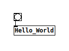
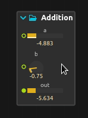
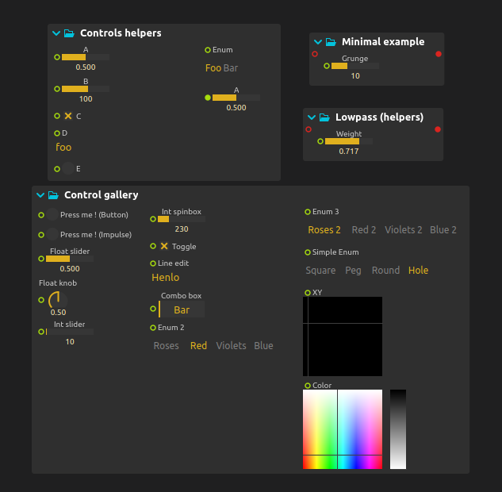
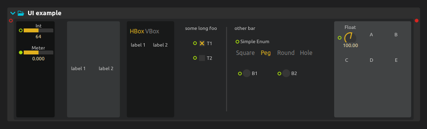

Making media objects with Avendish
This book is two things: a tutorial for the usage of Avendish, intertwined with an explanation of the concepts and implementation.
Avendish aims to enable media objects / processors authors to write the processor in the most natural way possible, and then to map this to host softwares or languages with so-called zero-cost abstraction.
By zero-cost abstraction, we mean zero run-time cost. However, we'll see that the system actually enables extremely short compile times compared to the norm in C++.
The library is borne from:
-
The necessity to reduce duplication among media processors in C++.
-
Allowing to express the quintessence of a given media processor.
- There should be no compromise at any point: the user of the library must be able to declare all the properties, inputs, outputs of a media processor, whether it processes audio, video, MIDI, asynchronous messages, etc...
- UIs must be possible.
- GPU-based processors must be possible.
- The way this is expressed should be the simplest possible way in C++, in the sense that the code should be as natural as possible: just declaring variables should be sufficient. The lack of proper reflection in C++ still limits this in a way, but we will see that it is already possible to get quite far !
- For a given processor, multiple potential expressions are possible. We aim to capture most possible expressions: for instance, it may be more natural for a given audio processor to implement it in a sample-wise way (each audio sample processed one-by-one), and for another to be implemented through buffer-wise processing.
-
The observation that the implementation of a media processor has no reason of depending on any kind of binding library: those are two entirely orthogonal concerns. Yet, due to how the language works, for the longest time writing such a processor necessarily embedded it inside some kind of run-time framework: JUCE, DPF, iPlug, etc. These frameworks are all great, but also all make compromises in terms of what is possible to express. Data types will be limited to a known list, UI will have to be written with a specific UI framework, etc. In contrast, Avendish processors are much more open ; processors can be written in their "canonic" form. The various bindings will then try to map as much as is possible to the environments they are bound to.
In addition, such frameworks are generally not suitable for embedded platforms such as micro-controllers, etc. JUCE does not work on ESP32 :-)
In contrast, Avendish processors can be written in a way that does not depend on any existing library, not even the standard C or C++ libraries, which makes them trivially portable to such platforms. The only required thing is a C++ compiler, really!
Why C++
To ease porting of most effects, which are also in C++. Step by step, we will be able to lift them towards maybe higher-level descriptions, but first I believe that having something in C++ is important to allow capturing the semantics of the vast majority of media processors in existence.
Also because this is the language I know best =p
Non-C++ alternatives exist: Faust and SOUL are the two most known and are great inspirations for Avendish ; they focus however mainly on audio processing. Avendish can be used to make purely message-based processors for e.g. Max/MSP and PureData, Python objects, etc. or video processing objects (currently implemented only for ossia score, but could easily be ported to e.g. Jitter for Max, GEM for PureData, etc.).
What is really Avendish
- An ontology for media objects.
- An automated binding of a part of the C++ object semantics to other languages and run-time environments.
- An example implementation of this until C++ gets proper reflection and code generation features.
- Very, very, very, very uncompromising on its goals.
- Lots of fun C++20 code !
GIMME CODE
Here's an example of a complete audio processor which uses an optional library of helper types: if one wants, the exact same thing can be written without any macro or pre-existing type ; it is just a tad more verbose.
struct MyProcessor {
// Define generic metadata
halp_meta(name, "Gain");
halp_meta(author, "Jean-Michaël Celerier");
halp_meta(uuid, "3183d03e-9228-4d50-98e0-e7601dd16a2e");
// Define the inputs of our processor
struct ins {
halp::dynamic_audio_bus<"Input", double> audio;
halp::knob_f32<"Gain", halp::range{.min = 0., .max = 1.}> gain;
} inputs;
// Define the outputs of our processor
struct outs {
halp::dynamic_audio_bus<"Output", double> audio;
halp::hbargraph_f32<"Measure", halp::range{-1., 1., 0.}> measure;
} outputs;
// Define an optional UI layout
struct ui {
using enum halp::colors;
using enum halp::layouts;
halp_meta(name, "Main")
halp_meta(layout, hbox)
halp_meta(background, mid)
struct {
halp_meta(name, "Widget")
halp_meta(layout, vbox)
halp_meta(background, dark)
const char* label = "Hello !";
halp::item<&ins::gain> widget;
const char* label2 = "Gain control!";
} widgets;
halp::spacing spc{.width = 20, .height = 20};
halp::item<&outs::measure> widget2;
};
// Our process function
void operator()(int N) {
auto& in = inputs.audio;
auto& out = outputs.audio;
const double gain = inputs.gain;
double measure = 0.;
for (int i = 0; i < in.channels; i++)
{
for (int j = 0; j < N; j++)
{
out[i][j] = gain * in[i][j];
measure += std::abs(out[i][j]);
}
}
if(N > 0 && in.channels > 0)
outputs.measure = measure / (N * in.channels);
}
};
Here is how it looks like when compiled against the ossia score backend:

Getting started
Here is a minimal, self-contained definition of an Avendish processor:
import std;
[[name: "Hello World"]]
export struct MyProcessor
{
void operator()() {
std::print("Henlo\n");
}
};
... at least, in an alternative universe where C++ has gotten custom attributes and reflection on those,
and where modules and std::print work consistently across all compilers ; in our universe, this is still a few years away. Keep hope, dear reader, keep hope !
Getting started, for good
Here is a minimal, self-contained definition of an Avendish processor, which works on 2022 compilers:
#pragma once
#include <cstdio>
struct MyProcessor
{
static consteval auto name() { return "Hello World"; }
void operator()() {
printf("Henlo\n");
}
};
Yes, it's not much. You may even already have some in your codebase without even being aware of it !
Now, you may be used to the usual APIs for making audio plug-ins and start wondering about all the things you are used too and that are missing here:
- Inheritance or shelving function pointers in a C struct.
- Libraries: defining an Avendish processor does not in itself require including anything. A central point of the system is that everything can be defined through bare C++ constructs, without requiring the user to import types from a library. A library of helpers is nonetheless provided, to simplify some repetitive cases, but is in no way mandatory ; if anything, I encourage anyone to try to make different helper APIs that fit different coding styles.
- Functions to process audio such as
void process(double** inputs, double** outpus, int frames);
We'll see how all the usual amenities can be built on top of this and simple C++ constructs such as variables, methods and structures.
Line by line
// This line is used to instruct the compiler to not include a header file multiple times.
#pragma once
// This line is used to allow our program to use `printf`:
#include <cstdio>
// This line declares a struct named HelloWorld. A struct can contain functions, variables, etc.
// It could also be a class - in C++, there is no strong semantic difference between either.
struct MyProcessor
{
// This line declares a function that will return a visible name to show to our
// users.
// - static is used so that an instance of HelloWorld is not needed:
// we can just refer to the function as HelloWorld::name();
// - consteval is used to enforce that the function can be called at compile-time,
// which may enable optimizations in the backends that will generate plug-ins.
// - auto because it does not matter much here, we know that this is a string :-)
static consteval auto name() { return "Hello World"; }
// This line declares a special function that will allow our processor to be executed as follows:
//
// HelloWorld the_processor;
// the_processor();
//
// ^ the second line will call the "operator()" function.
void operator()()
{
// This one should hopefully be obvious :-)
printf("Henlo\n");
}
};
Compiling our processor
Environment set-up
Before anything, we need a C++ compiler. The recommandation is to use Clang (at least clang-13). GCC 11 also works with some limitations. Visual Studio is sadly still not competent enough.
- On Windows, through llvm-mingw.
- On Mac, through Xcode.
- On Linux, through your distribution packages.
Avendish's code is header-only ; however, CMake automatizes correctly linking to the relevant libraries, and generates a correct entrypoint for the targeted bindings, thus we recommend installing it.
Ninja is recommended: it makes the build faster.
The APIs and SDK that you wish to create plug-ins / bindings for must also be available:
- PureData: needs the PureData API.
- m_pd.h and pd.lib must be findable through
CMAKE_PREFIX_PATH. - On Linux this is automatic if you install PureData through your distribution.
- m_pd.h and pd.lib must be findable through
- Max/MSP: needs the Max SDK.
- Pass
-DAVND_MAXSDK_PATH=/path/to/max/sdkto CMake.
- Pass
- Python: needs pybind11.
- Installable through most distro's repos.
- ossia: needs libossia.
- clap: needs clap.
- UIs can be built with Qt or Nuklear.
- Qt is installable easily through aqtinstall.
- VST3: needs the Steinberg VST3 SDK.
- Pass
-DVST3_SDK_ROOT=/path/to/vst3/sdkto CMake.
- Pass
- By default, plug-ins compatible with most DAWs through an obsolete, Vintage, almost vestigial, API will be built. This does not require any specific dependency to be installed, on the other hand it only supports audio plug-ins.
Building the template
The simplest way to get started is from the template repository: simply clear the Processor.cpp file for now and put the content in Processor.hpp.
Here's a complete example (from bash):
$ git clone https://github.com/celtera/avendish-audio-processor-template
$ mkdir build
$ cd build
$ cmake ../avendish-audio-processor-template
$ ninja # or make -j8
This should produce various binaries in the build folder: for instance, a PureData object (in build/pd), a Python one (in build/python, etc.).
Running the template in Python
Once the processor is built, we can for instance run it in Python:
Let's try to run our processor through the Python bindings:
$ cd build/python
# Check that our processor was built correctly
$ ls
pymy_processor.so
# Run it
$ python
>>> import pymy_processor
>>> proc = pymy_processor.Hello_World()
>>> proc.process()
Henlo
Running the template in PureData
Similarly, one can run the template in PureData:
$ cd build/pd
# Check that our processor was built correctly
$ ls
my_processor.l_ia64
# Run it
$ pd -lib my_processor
Make the following patch:

When sending a bang, the terminal in which PureData was launched should also print "Henlo". We'll see in a later chapter how to print on Pd's own console instead.
Running in DAWs
We could, but so far our object is not really an object that makes sense in a DAW: it does not process audio in any way. We'll see in further chapters how to make audio objects.
Adding ports
Our processor so far does not process much. It just reacts to an external trigger, to invoke a print function.
Note that the way this trigger is invoked varies between environments: in Python, we called a
process()function, while in PureData, we sent a bang to our object. That is one of the core philosophies of Avendish: bindings should make it so that the object fits as much as possible with the environment's semantics and idioms.
Most actual media processing systems work with the concept of ports to declare inputs and outputs, and Avendish embraces this fully.
Here is the code of a simple processor, which computes the sum of two numbers.
struct MyProcessor
{
static consteval auto name() { return "Addition"; }
struct
{
struct { float value; } a;
struct { float value; } b;
} inputs;
struct
{
struct { float value; } out;
} outputs;
void operator()() { outputs.out.value = inputs.a.value + inputs.b.value; }
};
Compiling and running this yields for instance a PureData object which can be used like this:

Note that the object respects the usual semantics of PureData: sending a message to the leftmost inlet will trigger the computation. Sending a message to the other inlets will store the value internally but won't trigger the actual computation.
For some objects, other semantics may make sense: creating an alternative binding to PureData which would implement another behaviour, such as triggering the computation only on "bang" messages, or on any input on any inlet, would be a relatively easy task.
Let's try in Python:
>>> import pymy_processor
>>> proc = pymy_processor.Addition()
>>> proc.process()
>>> p.input_0 = 123
>>> p.input_1 = 456
>>> p.process()
>>> p.output_0
579.0
Here the semantics follow usual "object" ones. You set some state on the object and call methods on it, which may change this state.
One could also make a binding that implements functional semantics, by passing the state of the processor as an immutable object instead. Python is already slow enough, though :p
Syntax explanation
Some readers may be surprised by the following syntax:
struct { float value; } a;
What it does is declare a variable a whose type is an unnamed structure.
Note that this is a distinct concept from anonymous structures:
struct { float value; };
which are legal in C but not in C++ (although most relevant compilers accept them), and are mostly useful for implementing unions:
union vec3 {
struct { float x, y, z; };
struct { float r, g, b; };
};
union vec3 v;
v.x = 1.0;
v.g = 2.0;
Motivation for using unnamed structures in Avendish is explained afterwards.
Naming things
In an ideal world, what we would have loved is writing the following code:
struct MyProcessor
{
static consteval auto name() { return "Addition"; }
struct
{
float a;
float b;
} inputs;
struct
{
float out;
} outputs;
void operator()() { outputs.out = inputs.a + inputs.b; }
};
and have our Python processor expose us variables named a, b and out. Sadly, without reflection on names, this is not possible yet. Thus, in the meantime we use structs to embed metadata relative to the ports:
struct MyProcessor
{
static consteval auto name() { return "Addition"; }
struct
{
struct {
static consteval auto name() { return "a"; }
float value;
} a;
struct {
static consteval auto name() { return "b"; }
float value;
} b;
} inputs;
struct
{
struct {
static consteval auto name() { return "out"; }
float value;
} out;
} outputs;
void operator()() { outputs.out.value = inputs.a.value + inputs.b.value; }
};
Now our Python example is cleaner to use:
>>> import pymy_processor
>>> proc = pymy_processor.Addition()
>>> proc.process()
>>> p.a = 123
>>> p.b = 456
>>> p.process()
>>> p.out
579.0
Refactoring
One can see how writing:
struct {
static consteval auto name() { return "foobar"; }
float value;
} foobar;
for 200 controls would get boring quick. In addition, the implementation of our processing function is not as clean as we'd want: in an ideal world, it would be just:
void operator()() { outputs.out = inputs.a + inputs.b; }
Thankfully, we can introduce our own custom abstractions without breaking anything: the only thing that matters is that they follow the "shape" of what a parameter is.
This shape is defined (as a first approximation) as follows:
template<typename T>
concept parameter = requires (T t) { t.value = {}; };
In C++ parlance, this means that a type can be recognized as a parameter if
- It has a member called
value. - This member is assignable with some default value.
For instance:
struct bad_1 {
const int value;
};
struct bad_2 {
void value();
};
class bad_3 {
int value;
};
are all invalid parameters.
This can be ensured easily by asking the compiler:
static_assert(!parameter<bad_1>);
static_assert(!parameter<bad_2>);
static_assert(!parameter<bad_3>);
static_assertis a C++ feature which allows to check a predicate at compile-time. If the predicate is false, the compiler will report an error.
Avendish will simply not recognize them and they won't be accessible anywhere.
Here are examples of valid parameters:
struct good_1 {
int value;
};
struct good_2 {
std::string value;
};
template<typename T>
struct assignable {
T& operator=(T x) {
printf("I changed !");
this->v = x;
return this->v;
}
T v;
};
class good_3 {
public:
assignable<double> value;
};
This can be ensured again by asking the compiler:
static_assert(parameter<good_1>);
static_assert(parameter<good_2>);
static_assert(parameter<good_3>);
Avendish provides an helper library, halp (Helper Abstractions for Literate Programming), which match this pattern. However, users are encouraged to develop their own abstractions that fit their preferred coding style :-)
Ports with the helper library
Here is how our processor looks with the current set of helpers:
#pragma once
#include <halp/controls.hpp>
struct MyProcessor
{
// halp_meta(A, B) expands to static consteval auto A() { return B; }
halp_meta(name, "Addition")
// In a perfect world one would just define attributes on the struct instead...
//
// [[name: "Addition"]]
// struct MyProcessor { ... };
//
// or more realistically, `static constexpr auto name = "foo";`
// which would be an acceptable compromise.
struct
{
// val_port is a simple type which contains
// - a member value of type float
// - the name() metadata method
// - helper operators to allow easy assignment and use of the value.
halp::val_port<"a", float> a;
halp::val_port<"b", float> b;
} inputs;
struct
{
halp::val_port<"out", float> out;
} outputs;
void operator()() { outputs.out = inputs.a + inputs.b; }
};
If one really does not like templates, the following macro could be defined instead to make custom ports:
#define my_value_port(Name, Type) \
struct { \
static consteval auto name() { return #Name; } \
Type value; \
} Name;
// Used like:
my_value_port(a, float)
my_value_port(b, std::string)
... etc ...
Likewise if one day the metaclasses proposal comes to pass, it will be possible to convert:
meta_struct
{
float a;
float b;
} inputs;
into a struct of the right shape, automatically, at compile-time, and all the current bindings will keep working.
Port metadatas
Our ports so far are very simple: floating-point values, without any more information attached than a name to show to the user.
Most of the time, we'll want to attach some semantic metadata to the ports: for instance, a range of acceptable values, the kind of UI widget that should be shown to the user, etc.
Defining a min/max range
Here is how one can define a port with such a range:
struct {
static consteval auto name() { return "foobar"; }
struct range {
float min = -1.;
float max = 1.;
float init = 0.5;
};
float value{};
} foobar;
Here is another version which will be picked up too:
struct {
static consteval auto name() { return "foobar"; }
static consteval auto range() {
struct {
float min = -1.;
float max = 1.;
float init = 0.5;
} r;
return r;
};
float value{};
} foobar;
More generally, in most cases, Avendish will try to make sense of the things the author declares, whether they are types, variables or functions. This is not implemented entirely consistently yet, but it is a goal of the library in order to enable various coding styles and as much freedom of expression as possible for the media processor developer.
Keeping metadata static
Note that we should still be careful in our struct definitions to not declare normal member variables for common metadata, which would take valuable memory and mess with our cache lines. This reduces performance for no good reason: imagine instantiating 10000 "processor" objects, you do not want each processor to carry the overhead of storing the range as a member variable, such as this:
struct {
const char* name = "foobar";
struct {
float min = -1.;
float max = 1.;
float init = 0.5;
} range;
float value{};
} foobar;
// In this case:
static_assert(sizeof(foobar) == 4 * sizeof(float) + sizeof(const char*));
// sizeof(foobar) == 24 on 64-bit systems
// While in the previous cases, the "name" and "range" information is stored in a static space in the binary ; its cost is paid only once:
static_assert(sizeof(foobar) == sizeof(float));
// sizeof(foobar) == 4
Testing on a processor
If we modify our example processor this way:
struct MyProcessor
{
static consteval auto name() { return "Addition"; }
struct
{
struct {
static consteval auto name() { return "a"; }
struct range {
float min = -10.;
float max = 10.;
float init = 0.;
};
float value;
} a;
struct {
static consteval auto name() { return "b"; }
struct range {
float min = -1.;
float max = 1.;
float init = 0.;
};
float value;
} b;
} inputs;
struct
{
struct {
static consteval auto name() { return "out"; }
float value;
} out;
} outputs;
void operator()() { outputs.out.value = inputs.a.value + inputs.b.value; }
};
then some backends will start to be able to do interesting things, like showing relevant UI widgets, or clamping the inputs / outputs.
This is not possible in all back-ends, sadly. Consider for instance PureData: the way one adds a port is by passing a pointer to a floating-point value to Pd, which will write directly the inbound value at the memory address: there is no point at which we could plug-in to perform clamping of the value.
Two alternatives would be possible in this case:
- Change the back-end to instead expect all messages on the first inlet, as those can be captured. This would certainly yield lower performance as one now would have to pass a symbol indicating the parameter so that the object knows to which port the input should map.
- Implement an abstraction layer which would duplicate the parameters with their clamped version, and perform the clamping on all parameters whenever the process function gets called. This would however be hurtful in terms of performance and memory use.
Defining UI widgets
Avendish can recognize a few names that will indicate that a widget of a certain type must be created.
For instance:
struct {
enum { knob };
static consteval auto name() { return "foobar"; }
struct range {
float min = -1.;
float max = 1.;
float init = 0.5;
};
float value{};
} foobar;
Simply adding the enum definition in the struct will allow the bindings to detect it at compile-time, and instantiate an appropriate UI control.
The following widget names are currently recognized:
bang, impulse
button, pushbutton
toggle, checkbox,
hslider, vslider, slider
spinbox,
knob,
lineedit,
choices, enumeration
combobox, list
xy,
color,
hbargraph, vbargraph, bargraph
This kind of widget definition is here to enable host DAWs to automatically generate appropriate UIs automatically.
A further chapter will present how to create entirely custom painted UIs and widgets.
Widget helpers
To simplify the common use case of defining a port such as "slider with a range", a set of common helper types is provided.
Here is our example, now as refined as it can be ; almost no character is superfluous or needlessly repeated except the names of controls:
#pragma once
#include <halp/controls.hpp>
struct MyProcessor
{
halp_meta(name, "Addition")
struct
{
halp::hslider_f32<"a", halp::range{.min = -10, .max = 10, .init = 0}> a;
halp::knob_f32<"b" , halp::range{.min = -1, .max = 1, .init = 0}> b;
} inputs;
struct
{
halp::hbargraph_f32<"out", halp::range{.min = -11, .max = 11, .init = 0}> out;
} outputs;
void operator()() { outputs.out = inputs.a + inputs.b; }
};
This is how an environment such as ossia score renders it:

Note that even with our helper types, the following holds:
static_assert(sizeof(MyProcessor) == 3 * sizeof(float));
That is, an instance of our object weighs in memory exactly the size of its inputs and outputs, nothing else. In addition, the binding libraries try extremely hard to not allocate any memory dynamically, which leads to very concise memory representations of our media objects.
Writing audio processors
The processors we wrote until now only processed "control" values.
As a convention, those are values that change infrequently, relative to the audio rate: every few milliseconds, as opposed to every few dozen microseconds for individual audio samples.
Argument-based processors
Let's see how one can write a simple audio filter in Avendish:
struct MyProcessor
{
static consteval auto name() { return "Distortion"; }
float operator()(float input)
{
return std::tanh(input);
}
};
That's it. That's the processor :-)
Maybe you are used to writing processors that operate with buffers of samples. Fear not, here is another valid Avendish audio processor, which should reassure most readers:
struct MyProcessor
{
static consteval auto name() { return "Distortion"; }
static consteval auto input_channels() { return 2; }
static consteval auto output_channels() { return 2; }
void operator()(double** inputs, double** outputs, int frames)
{
for (int c = 0; c < input_channels(); ++c)
{
for (int k = 0; k < frames; k++)
{
outputs[c][k] = std::tanh(inputs[c][k]);
}
}
}
};
The middle-ground of a processor that processes a single channel is also possible (and so is the possibility to use floats or doubles for the definition of the processor):
struct MyProcessor
{
static consteval auto name() { return "Distortion"; }
void operator()(float* inputs, float* outputs, int frames)
{
for (int k = 0; k < frames; k++)
{
outputs[k] = std::tanh(inputs[k]);
}
}
};
Those are all ways that enable quickly writing very simple effects (although a lot of ground is already covered). For more advanced systems, with side-chains and such, it is preferable to use proper ports instead.
Port-based processors
Here are three examples of valid audio ports:
- Sample-wise
struct {
static consteval auto name() { return "In"; }
float sample{};
};
- Channel-wise
struct {
static consteval auto name() { return "Out"; }
float* channel{};
};
- Bus-wise, with a fixed channel count. Here, bindings will ensure that there are always as many channels allocated.
struct {
static consteval auto name() { return "Ins"; }
static constexpr int channels() { return 2; }
float** samples{}; // At some point this should be renamed bus...
};
- Bus-wise, with a modifiable channel count. Here, bindings will put exactly as many channels as the end-user of the software requested ; this count will be contained in
channels.
struct {
static consteval auto name() { return "Outs"; }
int channels = 0;
double** samples{}; // At some point this should be renamed bus...
};
An astute reader may wonder why one could not fix a channel count by doing
const int channels = 2;instead ofint channels() { return 2; };. Sadly, this would make our types non-assignable, which makes things harder. It would also use bytes for each instance of the processor. A viable middle-ground could bestatic constexpr int channels = 2;but C++ does not allow static variables in unnamed types, thus this does not leave a lot of choice.
Process function for ports
For ports-based processor, the process function takes the number of frames as argument. Here is a complete, bare example of a gain processor.
struct Gain {
static constexpr auto name() { return "Gain"; }
struct {
struct {
static constexpr auto name() { return "Input"; }
const double** samples;
int channels;
} audio;
struct {
static constexpr auto name() { return "Gain"; }
struct range {
const float min = 0.;
const float max = 1.;
const float init = 0.5;
};
float value;
} gain;
} inputs;
struct {
struct {
static constexpr auto name() { return "Output"; }
double** samples;
int channels;
} audio;
} outputs;
void operator()(int N) {
auto& in = inputs.audio.samples;
auto& out = outputs.audio.samples;
for (int i = 0; i < p1.channels; i++)
for (int j = 0; j < N; j++)
out[i][j] = inputs.gain.value * in[i][j];
}
};
Helpers
halp provides helper types for these common cases:
halp::audio_sample<"A", double> audio;
halp::audio_channel<"B", double> audio;
halp::fixed_audio_bus<"C", double, 2> audio;
halp::dynamic_audio_bus<"D", double> audio;
Important: it is not possible to mix different types of audio ports in a single processor: audio sample and audio bus operate necessarily on different time-scales that are impossible to combine in a single function. Technically, it would be possible to combine audio channels and audio buses, but for the sake of simplicity this is currently forbidden.
Likewise, it is forbidden to mix float and double inputs for audio ports (as it simply does not make sense: no host in existence is able to provide audio in two different formats at the same time).
Gain processor, helpers version
The exact same example as above, just shorter to write :)
struct Gain {
static constexpr auto name() { return "Gain"; }
struct {
halp::dynamic_audio_bus<"Input", double> audio;
halp::hslider_f32<"Gain", avnd::range{0., 1., 0.5}> gain;
} inputs;
struct {
halp::dynamic_audio_bus<"Output", double> audio;
} outputs;
void operator()(int N) {
auto& in = inputs.audio;
auto& out = outputs.audio;
const float gain = inputs.gain;
for (int i = 0; i < in.channels; i++)
for (int j = 0; j < N; j++)
out[i][j] = gain * in[i][j];
}
};
Further work
We currently have the following matrix of possible forms of audio ports:
| 1 channel | N channels | |
|---|---|---|
| 1 frame | float sample; | ??? |
| N frames | float* channel; | float** samples; |
For the N channels / 1 frame case, one could imagine for instance:
struct {
float bus[2]; // Fixed channels case
}
or
struct {
float* bus; // Dynamic channels case
}
to indicate a per-sample, multi-channel bus, but this has not been implemented yet.
Monophonic processors
There are three special cases:
- Processors with one sample input and one sample output.
- Processors with one channel input and one channel output.
- Processors with one dynamic bus input, one dynamic bus output, and no fixed channels being specified.
In these three cases, the processor is recognized as polyphony-friendly. That means that in cases 1 and 2, the processor will be instantiated potentially multiple times automatically, if used in e.g. a stereo DAW.
In case 3, the channels of inputs and outputs will be set to the same count, which comes from the host.
Polyphonic processors should use types for their I/O
Let's consider the following processor:
struct MyProcessor
{
static consteval auto name() { return "Distortion"; }
struct {
struct { float value; } gain;
} inputs;
double operator()(double input)
{
accumulator = std::fmod(accumulator+1.f, 10.f);
return std::tanh(inputs.gain.value * input + accumulator);
}
private:
double accumulator{};
};
We have three different values involved:
inputis the audio sample that is to be processed.inputs.gain.valueis an external control which increases or decreases the distortion.accumulatoris an internal variable used by the processing algorithm.
Now consider this in the context of polyphony: the only thing that we can do is instantiate MyProcessor three times.
- We cannot call
operator()of a single instance on multiple channels, as the internal state must stay independent of the channels. - But now the inputs are duplicated for all instances. If we want to implement a filter bank with thousands of duplicated processors in parallel, this would be a huge waste of memory if they all depend on the same
gainvalue.
Thus, it is recommended in this case to use the following form:
struct MyProcessor
{
static consteval auto name() { return "Distortion"; }
struct inputs {
struct { float value; } gain;
};
struct outputs { };
double operator()(double input, const inputs& ins, outputs& outs)
{
accumulator = std::fmod(accumulator+1.f, 10.f);
return std::tanh(ins.gain.value * input + accumulator);
}
private:
double accumulator{};
};
Here, Avendish will instantiate a single inputs array, which will be shared across all polyphony voices, which will likely use less memory and be more performant in case of large amount of parameters & voices.
Here is what I would term the "canonic" of this version, with additionally our helpers to reduce typing, and the audio samples passed through ports instead of through arguments:
struct MyProcessor
{
static consteval auto name() { return "Distortion"; }
struct inputs {
halp::audio_sample<"In", double> audio;
halp::hslider_f32<"Gain", halp::range{.min = 0, .max = 100, .init = 1}> gain;
};
struct outputs {
halp::audio_sample<"A", double> audio;
};
void operator()(const inputs& ins, outputs& outs)
{
accumulator = std::fmod(accumulator + 0.01f, 10.f);
outs.audio = std::tanh(ins.gain * ins.audio + accumulator);
}
private:
double accumulator{};
};
Passing inputs and outputs as types is also possible for all the other forms described previously - everything is possible, write your plug-ins as it suits you best :) and who knows, maybe with metaclasse one would also be able to generate the more efficient form directly.
Audio setup
It is fairly common for audio systems to need to have some buffers allocated or perform pre-computations depending on the sample rate and buffer size of the system.
This can be done by adding the following method in the processor:
void prepare(/* some_type */ info) {
...
}
some_type can be a custom type with the following allowed fields:
rate: will be filled with the sample rate.frames: will be filled with the maximum frame (buffer) size.input_channels/output_channels: for processors with unspecified numbers of channels, it will be notified here.- Alternatively, just specifying
channelsworks too if inputs and outputs are expected to be the same.
Those variables must be assignable, and are all optional (remember the foreword: Avendish is UNCOMPROMISING).
Here are some valid examples:
- No member at all: this can be used to just notify the processor than processing is about to start.
struct setup_a { };
void prepare(setup_a info) {
...
}
- Most common use case
struct setup_b {
float rate{};
int frames{};
};
void prepare(setup_b info) {
...
}
- For variable channels in simple audio filters:
struct setup_c {
float rate{};
int frames{};
int channels{};
};
void prepare(setup_c info) {
...
}
How does this work ?
If you are interested in the implementation, it is actually fairly simple.
- First we extract the function arguments of
prepareif the function exists (seeavnd/common/function_reflection.hppfor the method), to get the typeTof the first argument. - Then we do the following if it exists:
using type = /* type of T in prepare(T t) */;
if constexpr(requires (T t) { t.frames = 123; })
t.frames = ... the buffer size reported by the DAW ...;
if constexpr(requires (T t) { t.rate = 44100; })
t.rate = ... the sample-rate reported by the DAW ...;
This way, only the cost of the variables that are actually used by the algorithm is ever incurred, which is of course not super important but a good reference implementation for this way of doing for other parts of the system where it matters more.
Audio arguments
In addition of the global set-up step, one may require per-process-step arguments. Most common needs are for instance the current tempo, etc.
The infrastructure put in place for this is very similar to the one previously mentioned for the setup step.
The way it is done is simply by passing it as the last argument of the processing operator() function.
If there is such a type, it will contain at least the frames.
Note: due to a lazy developer, currently this type has to be called
tick.
Example:
struct MyProcessor {
...
struct tick {
int frames;
double tempo;
};
void operator()(tick tick) { ... }
float operator()(float in, tick tick) { ... }
void operator()(float* in, float* out, tick tick) { ... }
void operator()(float** in, float** out, tick tick) { ... }
// And also the versions that take input and output types as arguments
void operator()(const inputs& in, outputs& out, tick tick) { ... }
float operator()(float in, const inputs& in, outputs& out, tick tick) { ... }
void operator()(float* in, float* out, const inputs& in, outputs& out, tick tick) { ... }
void operator()(float** in, float** out, const inputs& in, outputs& out, tick tick) { ... }
// And also the double-taking versions, not duplicated here :-)
};
The currently supported members are:
frames: the buffer size
The plan is to introduce:
tempoand all things relative to musicality, e.g. current bar, etc.- But first we have to define it in a proper way, which is compatible with VST, CLAP, etc.
time_since_start- and other similar timing-related things which will all be able to be opt-in.
Messages
So far, we already have something which allows to express a great deal of audio plug-ins, as well as many objects that do not operate in a manner synchronized to a constant sound input, but also in a more asynchronous way, and with things more complicated than single float, int or string values.
A snippet of code is worth ten thousand words: here is how one defines a message input.
struct MyProcessor {
struct messages {
struct {
static consteval auto name() { return "dump"; }
void operator()(MyProcessor& p, double arg1, std::string_view arg2) {
std::cout << arg1 << ";" << arg2 << "\n";
}
} my_message;
};
};
Note that the messages are stored in a structure named messages. It could also be the name of the value, but this would likely use at least a few bytes per instance which would be wasted as messages are not supposed to have states themselves.
Messages are of course only meaningful in environments which support them. One argument messages are equivalent to parameters. If there is more than one argument, not all host systems may be able to handle them ; for instance, it does not make much sense for VST3 plug-ins. On the other hand, programming language bindings or systems such as Max and PureData have no problem with them.
Passing existing functions
The following syntaxes are also possible:
void free_function() { printf("Free function\n"); }
struct MyProcessor {
void my_member(int x);
struct messages {
// Using a pointer-to-member function
struct {
static consteval auto name() { return "member"; }
static consteval auto func() { return &MyProcessor::my_member; }
} member;
// Using a lambda-function
struct
{
static consteval auto name() { return "lambda_function"; }
static consteval auto func() {
return [] { printf("lambda\n"); };
}
} lambda;
// Using a free function
struct
{
static consteval auto name() { return "function"; }
static consteval auto func() { return free_function; }
} freefunc;
};
};
In every case, if one wants access to the processor object, it has to be the first argument of the function (except the non-static-member-function case where it is not necessary as the function already has access to the this pointer by definition).
Type-checking
Messages are type-checked: in the example above, for instance, PureData will return an error for the message [dump foo bar>. For the message [dump 0.1 bar> things will however work out just fine :-)
Arbitrary inputs
It may be necessary to have messages that accept an arbitrary number of inputs. Here is how:
struct {
static consteval auto name() { return "args"; }
void operator()(MyProcessor& p, std::ranges::input_range auto range) {
for(const std::variant& argument : range) {
// Print the argument whatever the content
// (a library such as fmt can do that directly)
std::visit([](auto& e) { std::cout << e << "\n"; }, argument);
// Try to do something useful with it - here the types depend on what the binding give us. So far only Max and Pd support that so the only possible types are floats, doubles and std::string_view
if(std::get_if<double>(argument)) { ... }
else if(std::get_if<std::string_view>(argument)) { ... }
// ... etc
}
}
} my_variadic_message;
Overloading
Overloading is not supported yet, but there are plans for it.
How does the above code work ?
I think that this case is pretty nice and a good example of how C++ can greatly improve type safety over C APIs: a common problem for instance with Max or Pd is accessing the incorrect member of an union when iterating the arguments to a message.
Avendish has the following method, which transforms a Max or Pd argument list, into an iterable coroutine-based range of std::variant.
using atom_iterator = avnd::generator<std::variant<double, std::string_view>>;
inline atom_iterator make_atom_iterator(int argc, t_atom* argv)
{
for (int i = 0; i < argc; ++i) {
switch (argv[i].a_type) {
case A_FLOAT: {
co_yield argv[i].a_w.w_float;
break;
}
case A_SYM: {
co_yield std::string_view{argv[i].a_w.w_sym->s_name};
break;
}
default:
break;
}
}
}
Here, atom_iterator is what gets passed to my_variadic_message. It allows to deport the iteration of the loop over the arguments into the calling code, but handles the matching from type to union member in a generic way and transforms them into safer std::variant instances on-the-fly, which removes an entire class of possible errors while not costing much : in my experiments for instance, the compiler is able to elide entirely any form of dynamic memory allocation which would normally be required there.
Callbacks
Just like messages allow to define functions that will be called from an outside request, it is also possible to define callbacks: functions that our processor will call, and which will be sent to the outside world.
Just like for messages, this does not really make sense for instance for audio processors ; however it is pretty much necessary to make useful Max or Pd objects.
Callbacks are defined as part of the outputs struct.
Defining a callback with std::function
This is a first possibility, which is pretty simple:
struct {
static consteval auto name() { return "bong"; }
std::function<void(float)> call;
};
The bindings will make sure that a function is present in call, so that our code can call it:
struct MyProcessor {
static consteval auto name() { return "Distortion"; }
struct {
struct {
static consteval auto name() { return "overload"; }
std::function<void(float)> call;
} overload;
} outputs;
float operator()(float input)
{
if(input > 1.0)
outputs.overload.call(input);
return std::tanh(input);
}
};
However, we also want to be able to live without std:: types ; in particular, std::function is a quite complex beast which does type-erasure, potential dynamic memory allocations, and may not be available on all platforms.
Thus, it is also possible to define callbacks with a simple pair of function-pointer & context:
struct {
static consteval auto name() { return "overload"; }
struct {
void (*function)(void*, float);
void* context;
} call;
} overload;
The bindings will fill the function and function pointer, so that one can call them:
float operator()(float input)
{
if(input > 1.0)
{
auto& call = outputs.overload.call;
call.function(call.context, input);
}
return std::tanh(input);
}
Of course, this is fairly verbose: thankfully, helpers are provided to make this as simple as std::function but without the overhead (until std::function_view gets implemented):
struct {
static consteval auto name() { return "overload"; }
halp::basic_callback<void(float)> call;
} overload;
Initialization
Some media systems provide a way for objects to be passed initialization arguments.
Avendish supports this with a special "initialize" method. Ultimately, I'd like to be able to simply use C++ constructors for this, but haven't managed to yet.
Here's an example:
struct MyProcessor {
void initialize(float a, std::string_view b)
{
std::cout << a << " ; " << b << std::endl;
}
...
};
Max and Pd will report an error if the object is not initialized correctly, e.g. like this:
[my_processor 1.0 foo] // OK
[my_processor foo 1.0] // Not OK
[my_processor] // Not OK
[my_processor 0 0 0 1 2 3] // Not OK
MIDI I/O
Some media systems may have a concept of MIDI input / output. Note that currently this is only implemented for DAW-ish bindings: ossia, VST3, CLAP... Max and Pd do not support it yet (but if there is a standard for passing MIDI messages between objects there I'd love to hear about it !).
There are a few ways to specify MIDI ports.
Here is how one specifies unsafe MIDI ports:
struct
{
static consteval auto name() { return "MIDI"; }
struct
{
uint8_t bytes[3]{};
int timestamp{}; // relative to the beginning of the tick
}* midi_messages{};
std::size_t size{};
} midi_port;
Or, more clearly:
// the name does not matter
struct midi_message {
uint8_t bytes[3]{};
int timestamp{}; // relative to the beginning of the tick
};
struct
{
static consteval auto name() { return "MIDI"; }
midi_message* midi_messages{};
std::size_t size{};
} midi_port;
Here, Avendish bindings will allocate a large enough buffer to store MIDI messages ; this is mainly to enable writing dynamic-allocation-free backends where such a buffer may be allocated statically.
It is also possible to do this if you don't expect to run your code on Arduinos:
struct
{
// Using a non-fixed size type here will enable MIDI messages > 3 bytes, if for instance your
// processor expects to handle SYSEX messages.
struct msg {
std::vector<uint8_t> bytes;
int64_t timestamp{};
};
std::vector<msg> midi_messages;
} midi_port;
Helpers
The library provides helper types which are a good compromise between these two solutions, as they are based on boost::container::small_vector: for small numbers of MIDI messages, there will be no memory allocation, but pathological cases (an host sending a thousand MIDI messages in a single tick) can still be handled without loosing messages.
The type is very simple:
halp::midi_bus<"In"> midi;
MIDI synth example
This example is a very simple synthesizer. Note that for the sake of simplicity for the implementer, we use two additional libraries:
libremidiprovides an usefulenumof common MIDI messages types.libossiaprovides frequency <-> MIDI note and gain <-> MIDI velocity conversion operations.
#pragma once
#include <halp/audio.hpp>
#include <halp/controls.hpp>
#include <halp/meta.hpp>
#include <halp/midi.hpp>
#include <halp/sample_accurate_controls.hpp>
#include <libremidi/message.hpp>
#include <ossia/network/dataspace/gain.hpp>
#include <ossia/network/dataspace/time.hpp>
#include <ossia/network/dataspace/value_with_unit.hpp>
namespace examples
{
/**
* This example exhibits a simple, monophonic synthesizer.
* It relies on some libossia niceties.
*/
struct Synth
{
halp_meta(name, "My example synth");
halp_meta(c_name, "synth_123");
halp_meta(category, "Demo");
halp_meta(author, "Jean-Michaël Celerier");
halp_meta(description, "A demo synth");
halp_meta(uuid, "93eb0f78-3d97-4273-8a11-3df5714d66dc");
struct
{
/** MIDI input: simply a list of timestamped messages.
* Timestamp are in samples, 0 is the first sample.
*/
halp::midi_bus<"In"> midi;
} inputs;
struct
{
halp::fixed_audio_bus<"Out", double, 2> audio;
} outputs;
struct conf
{
int sample_rate{44100};
} configuration;
void prepare(conf c) { configuration = c; }
int in_flight = 0;
ossia::frequency last_note{};
ossia::linear last_volume{};
double phase = 0.;
/** Simple monophonic synthesizer **/
void operator()(int frames)
{
// 1. Process the MIDI messages. We'll just play the latest note-on
// in a not very sample-accurate way..
for (auto& m : inputs.midi.midi_messages)
{
// Let's ignore channels
switch ((libremidi::message_type) (m.bytes[0] & 0xF0))
{
case libremidi::message_type::NOTE_ON:
in_flight++;
// Let's leverage the ossia unit conversion framework (adapted from Jamoma):
// bytes is interpreted as a midi pitch and then converted to frequency.
last_note = ossia::midi_pitch{m.bytes[1]};
// Store the velocity in linear gain
last_volume = ossia::midigain{m.bytes[2]};
break;
case libremidi::message_type::NOTE_OFF:
in_flight--;
break;
default:
break;
}
}
// 2. Quit if we don't have any more note to play
if (in_flight <= 0)
return;
// 3. Output some bleeps
double increment
= ossia::two_pi * last_note.dataspace_value / double(configuration.sample_rate);
auto& out = outputs.audio.samples;
for (int64_t j = 0; j < frames; j++)
{
out[0][j] = last_volume.dataspace_value * std::sin(phase);
out[1][j] = out[0][j];
phase += increment;
}
}
};
}
Image ports
Some media systems have the ability to process images. Avendish is not restricted here :-)
Note that this part of the system is still pretty much in flux, in particular with regards of how allocations are supposed to be handled. Any feedback on this is welcome.
First, here is how we define a viable texture type:
struct my_texture
{
enum format { RGBA }; // The only recognized one so far
unsigned char* bytes;
int width;
int height;
bool changed;
};
Then, a texture port:
struct {
rgba_texture texture;
} input;
Note that currently, it is the responsibility of the plug-in author to allocate the texture and set the changed bool for output ports. Input textures come from outside.
Due to the large cost of uploading a texture, changed is used to indicate both to the plug-in author that input textures have been touched,and for the plug-in author to indicate to the external environment that the output has changed and must be re-uploaded to the GPU.
GPU processing
... is not currently supported properly, but is under active investigation.
The two possibilities going forward are:
- Wrap / conceptify an API not dissimilar to abstraction APIs such as BGFX or Qt RHI which abstract over modern graphics APIs such as Vulkan, Metal and D3D (and retain compatibility with OpenGL).
- Make bindings that support compilation to GPU programs, for instance with CUDA or Circle. This is what I think is the best way going forward :-)
Helpers
A few types are provided:
halp::rgba_texturehalp::texture_input<"Name">provides methods to get an RGBA pixel:
auto [r,g,b,a] = tex.get(10, 20);
halp::texture_output<"Name">provides methods to set a RGBA pixel:
tex.set(10, 20, {.r = 10, .g = 100, .b = 34, .a = 255});
tex.set(10, 20, 10, 100, 34, 255);
as well as useful method to initialize and mark the texture ready for upload:
// Call this in the constructor or before processing starts
tex.create(100, 100);
// Call this after making changes to the texture
tex.upload();
Image processor example
This example is a very simple image filter. It takes an input image and downscales & degrades it.
#pragma once
#include <halp/audio.hpp>
#include <halp/controls.hpp>
#include <halp/meta.hpp>
#include <halp/sample_accurate_controls.hpp>
#include <halp/texture.hpp>
#include <cmath>
namespace examples
{
struct TextureFilterExample
{
halp_meta(name, "My example texture filter");
halp_meta(c_name, "texture_filt");
halp_meta(category, "Demo");
halp_meta(author, "Jean-Michaël Celerier");
halp_meta(description, "Example texture filter");
halp_meta(uuid, "3183d03e-9228-4d50-98e0-e7601dd16a2e");
struct
{
halp::texture_input<"In"> image;
} inputs;
struct
{
halp::texture_output<"Out"> image;
} outputs;
// Some initialization can be done in the constructor.
TextureFilterExample() noexcept
{
// Allocate some initial data
outputs.image.create(1, 1);
}
void operator()()
{
auto& in_tex = inputs.image.texture;
auto& out_tex = outputs.image.texture;
// Since GPU readbacks are asynchronous: reading textures may take some time and
// thus the data may not be available from the beginning.
if (in_tex.bytes == nullptr)
return;
// Texture hasn't changed since last time, no need to recompute anything
if (!in_tex.changed)
return;
in_tex.changed = false;
// We (dirtily) downscale by a factor of 16
if (out_tex.width != in_tex.width || out_tex.height != in_tex.height)
outputs.image.create(in_tex.width / 16, in_tex.height / 16);
for (int y = 0; y < in_tex.height / 16; y++)
{
for (int x = 0; x < in_tex.width / 16; x++)
{
// Get a pixel
auto [r, g, b, a] = inputs.image.get(x * 16, y * 16);
// (Dirtily) Take the luminance and compute its contrast
double contrasted = std::pow((r + g + b) / (3. * 255.), 4.);
// (Dirtily) Posterize
uint8_t col = uint8_t(contrasted * 8) * (255 / 8.);
// Update the output texture
outputs.image.set(x, y, col, col, col, 255);
}
}
// Call this when the texture changed
outputs.image.upload();
}
};
}
Metadatas
So far the main metadata we saw for our processor is its name:
static consteval auto name() { return "Foo"; }
Or with the helper macro:
halp_meta(name, "Foo")
There are a few more useful metadatas that can be used and which will be used depending on whether the bindings support exposing them. Here is a list in order of importance; it is recommended that strings are used for all of these and that they are filled as much as possible.
name: the pretty name of the object.c_name: a C-identifier-compatible name for the object. This is necessary for instance for systems such as Python, PureData or Max which do not support spaces or special characters in names.uuid: a string such as8a4be4ec-c332-453a-b029-305444ee97a0, generated for instance with theuuidgencommand on Linux, Mac and Windows, or with uuidgenerator.net otherwise. This provides a computer-identifiable unique identifier for your plug-in, to ensure that hosts don't have collisions between plug-ins of the same name and different vendors when reloading them (sadly, on some older APIs this is unavoidable).description: a textual description of the processor.vendor: who distributes the plug-in.product: product name if the plug-in is part of a larger product.version: a version string, ideally convertible to an integer as some older APIs expect integer versions.category: a category for the plug-in. "Audio", "Synth", "Distortion", "Chorus"... there's no standard, but one can check for instance the names used in LV2 or the list mentioned by DISTRHO.copyright:(c) the plug-in authors 2022-xxxxlicense: an SPDX identifier for the license or a link towards a license documenturl: URL for the plug-in if any.email: A contact e-mail if any.manual_url: an url for a user manual if any.support_url: an url for user support, a forum, chat etc. if any.
Supported port types
The supported port types depend on the back-end. There is, however, some flexibility.
Simple ports
Float
They should work everywhere.
struct {
float value;
} my_port;
Double
They will not work in Max / Pd message processors (but will work in Max / Pd audio processors)
as their API expect a pointer to an existing float value.
struct {
double value;
} my_port;
Int
Same than double.
struct {
int value;
} my_port;
Bool
Same than double.
struct {
bool value;
} my_port;
Note that depending on the widget you use, UIs may create a
toggle, a maintainedbuttonor a momentarybang.
String
Will not work in environments such as VST3 for obvious reasons.
struct {
std::string value;
} my_port;
Enumerations
Enumerations are interesting. There are multiple ways to implement them.
Mapping a string to a value
Consider the following port:
template<typename T>
using my_pair = std::pair<std::string_view, T>;
struct {
halp_meta(name, "Enum 1");
enum widget { combobox };
struct range {
my_pair<float> values[3]{{"Foo", -10.f}, {"Bar", 5.f}, {"Baz", 10.f}};
int init{1}; // == Bar
};
float value{}; // Will be initialized to 5.f
} combobox;
Here, using a range definition of the form:
struct range {
<string -> value map> values[N] = {
{ key_1, value_1}, { key_2, value_2 }, ...
};
<integer> init = /* initial index */;
};
allows to initialize a combobox in the UI, with a predetermined set of values. The value type is the actual one which will be used for the port - Avendish will translate as needed.
Enumerating with only string
Consider the following port:
struct {
halp_meta(name, "Enum 2");
enum widget { enumeration };
struct range {
std::string_view values[4]{"Roses", "Red", "Violets", "Blue"};
int init{1}; // Red
};
std::string_view value;
};
Here, we can use std::string_view: the assigned value will always be
one from the range::values array ; these strings live in static memory
so there is no need to duplicate them in an std::string.
It is also possible to use an int for the port value:
struct {
halp_meta(name, "Enum 3");
enum widget { enumeration };
struct range {
std::string_view values[4]{"Roses", "Red", "Violets", "Blue"};
int init{1}; // Red
};
int value{};
};
Here, the int will just be the index of the selected thing.
Enumerating with proper enums :-)
Finally, we can also use actual enums.
enum my_enum { A, B, C };
struct {
halp_meta(name, "Enum 3");
enum widget { enumeration };
struct range
{
std::string_view values[3]{"A", "B", "C"};
my_enum init = my_enum::B;
};
my_enum value{};
}
The enum must be contiguous, representable in an int32 and start at 0:
enum { A = 3, B, C };will not work.enum { A, B, C, AA = 10 };will not work.enum { A, B, C, ... 4 billion values later ..., XXXX };will not work.enum { A, B, C };will work.
An helper is provided, which is sadly a macro as we cannot do proper enum reflection yet:
halp__enum("Simple Enum", Peg, Square, Peg, Round, Hole) my_port;
declares a port named "Simple Enum". The default value will be "Peg", the 4 enumerators are Square, Peg, Round, Hole.
Advanced types
2D position: xy
Here a special shape of struct is recognized:
struct {
struct { float x, y; } value;
} my_port;
Color
Here a special shape of struct is recognized:
struct {
struct { float r, g, b, a; } value;
} my_port;
Example
#pragma once
#include <avnd/concepts/audio_port.hpp>
#include <avnd/concepts/parameter.hpp>
#include <halp/audio.hpp>
#include <halp/controls.hpp>
#include <halp/controls_fmt.hpp>
#include <halp/meta.hpp>
#include <halp/sample_accurate_controls.hpp>
#include <boost/pfr.hpp>
#include <cmath>
namespace examples
{
struct ControlGallery
{
halp_meta(name, "Control gallery");
halp_meta(c_name, "control_gallery");
halp_meta(category, "Demo");
halp_meta(author, "<AUTHOR>");
halp_meta(description, "<DESCRIPTION>");
halp_meta(uuid, "a9b0e2c6-61e9-45df-a75d-27abf7fb43d7");
struct
{
//! Buttons are level-triggers: true as long as the button is pressed
halp::accurate<halp::maintained_button<"Press me ! (Button)">> button;
//! In contrast, impulses are edge-triggers: there is only a value at the moment of the click.
halp::accurate<halp::impulse_button<"Press me ! (Impulse)">> impulse_button;
//! Common widgets
halp::accurate<halp::hslider_f32<"Float slider", halp::range{0., 1., 0.5}>>
float_slider;
halp::accurate<halp::knob_f32<"Float knob", halp::range{0., 1., 0.5}>> float_knob;
//// // FIXME
//// struct {
//// // FIXME meta_control(Control::LogFloatSlider, "Float slider (log)", 0., 1., 0.5);
//// ossia::timed_vec<float> values{};
//// } log_float_slider;
////
#if defined(__clang__) || defined(_MSC_VER)
// https://gcc.gnu.org/bugzilla/show_bug.cgi?id=104720
halp::accurate<halp::hslider_i32<"Int slider", halp::range{0., 1000., 10.}>>
int_slider;
halp::accurate<halp::spinbox_i32<"Int spinbox", halp::range{0, 1000, 10}>>
int_spinbox;
#endif
//! Will look like a checkbox
halp::accurate<halp::toggle<"Toggle", halp::toggle_setup{.init = true}>> toggle;
//! Same, but allows to choose what is displayed.
// FIXME halp::accurate<halp::chooser_toggle<"Toggle", {"Falsey", "Truey"}, false>> chooser_toggle;
//! Allows to edit some text.
halp::accurate<halp::lineedit<"Line edit", "Henlo">> lineedit;
//! First member of the pair is the text, second is the value.
//! Defining comboboxes and enumerations is a tiny bit more complicated
struct : halp::sample_accurate_values<halp::combo_pair<float>>
{
halp_meta(name, "Combo box");
enum widget
{
combobox
};
struct range
{
halp::combo_pair<float> values[3]{{"Foo", -10.f}, {"Bar", 0.f}, {"Baz", 10.f}};
int init{1}; // Bar
};
float value{};
} combobox;
//! Here value will be the string
struct : halp::sample_accurate_values<std::string_view>
{
halp_meta(name, "Enum 2");
enum widget
{
enumeration
};
struct range
{
std::string_view values[4]{"Roses", "Red", "Violets", "Blue"};
int init{1}; // Red
};
// FIXME: string_view: allow outside bounds
std::string_view value;
} enumeration_a;
//! Here value will be the index of the string... but even better than that
//! is below:
struct : halp::sample_accurate_values<int>
{
halp_meta(name, "Enum 3");
enum widget
{
enumeration
};
struct range
{
std::string_view values[4]{"Roses 2", "Red 2", "Violets 2", "Blue 2"};
int init{1}; // Red
};
int value{};
} enumeration_b;
/// // FIXME
/// //! Same as Enum but won't reject strings that are not part of the list.
/// struct {
/// static const constexpr std::array<const char*, 3> choices() {
/// return {"Square", "Sine", "Triangle"};
/// };
/// // FIXME meta_control(Control::UnvalidatedEnum, "Unchecked enum", 1, choices());
/// ossia::timed_vec<std::string> values{};
/// } unvalidated_enumeration;
//! It's also possible to use this which will define an enum type and
//! map to it automatically.
//! e.g. in source one can then do:
//!
//! auto& param = inputs.simpler_enumeration;
//! using enum_type = decltype(param)::enum_type;
//! switch(param.value) {
//! case enum_type::Square:
//! ...
//! }
//!
//! OSC messages can use either the int index or the string.
using enum_t = halp__enum("Simple Enum", Peg, Square, Peg, Round, Hole);
halp::accurate<enum_t> simpler_enumeration;
//! Crosshair XY chooser
halp::accurate<halp::xy_pad_f32<"XY", halp::range{-5.f, 5.f, 0.f}>> position;
//! Color chooser. Colors are in 8-bit RGBA by default.
halp::accurate<halp::color_chooser<"Color">> color;
} inputs;
void operator()()
{
const bool has_impulse = !inputs.impulse_button.values.empty();
const bool has_button = std::any_of(
inputs.button.values.begin(),
inputs.button.values.end(),
[](const auto& p) { return p.second == true; });
if (!has_impulse && !has_button)
return;
boost::pfr::for_each_field(
inputs,
[] <typename Control> (const Control& input) {
{
auto val = input.values.begin()->second;
fmt::print("changed: {} {}", Control::name(), val);
}
});
}
};
}
Creating user interfaces
We have seen so far that we can specify widgets for our controls. Multiple back-ends may render these widgets in various ways. This is already a good start for making user interfaces, but most media systems generally have more specific user interface needs.
Avendish allows three levels of UI definition:
- Automatic: nothing to do, all the widgets corresponding to inputs and outputs of the processor will be generated automatically in a list. This is not pretty but sufficient for many simple cases. For instance, here is how some Avendish plug-ins render in ossia score.

- Giving layout hints. A declarative syntax allows to layout said items and text in usual containers, auomatically and with arbitrary nesting: hbox, vbox, tabs, split view... Here is, again, an example in ossia score.

- Creating entirely custom items with a Canvas-based API. It is also possible to load images, make custom animations and handle mouse events.
Layout-based UIs
To define a custom UI, one has to add a struct ui in the processor definition.
struct MyProcessor {
struct ui {
};
};
By default, this will do nothing: we have to fill it. ui will be the top-level widget.
Child widgets can be added simply by defining struct members.
Containers are defined by adding a layout() function which returns an enum value, which may
currently be any of the following names:
hbox,
vbox,
container,
group,
split,
tabs,
grid,
spacing,
control,
custom
For instance:
struct ui
{
static constexpr auto layout() { enum { hbox } d{}; return d; }
struct {
static constexpr auto layout() { enum { vbox } d{}; return d; }
const char* text = "text";
decltype(&ins::int_ctl) int_widget = &ins::int_ctl;
} widgets;
struct {
static constexpr auto layout() { enum { spacing } d{}; return d; }
static constexpr auto width() { return 20; }
static constexpr auto height() { return 20; }
} a_spacing;
const char* text = "text2";
};
This defines, conceptually, the following layout:
|-----------------------------|
| | text | |
| | | |
| | =widg= | <20px> text2 |
| | | |
| | | |
|-----------------------------|
Layouts
HBox, VBox
These will layout things either horizontally or vertically.
Split
Each children will be separated by a split line (thus generally one would use it to separate layouts).
Grid
This will layout children items in a grid.
Either of rows() and columns() properties can be defined, but not both:
static constexpr auto rows() { return 3; }
static constexpr auto columns() { return 3; }
If columns() is defined, children widget will be laid out in the first row until the column count is reached, then in the second row, etc. until there are no more children items, and conversely if rows() is defined.
That is, given:
struct {
static constexpr auto layout() { enum { grid } d{}; return d; }
static constexpr auto columns() { return 3; }
const char* text1 = "A";
const char* text2 = "B";
const char* text3 = "C";
const char* text4 = "D";
const char* text5 = "E";
} a_grid;
The layout will be:
|---------|
| A B C |
| D E |
|---------|
Instead, if rows() is defined to 3:
|------|
| A D |
| B E |
| C |
|------|
Tabs
Tabs will display children items in tabs.
Each children item should have a name() property which will be shown in the tab bar.
struct {
static constexpr auto layout() { enum { tabs } d{}; return d; }
struct {
static constexpr auto layout() { enum { hbox } d{}; return d; }
static constexpr auto name() { return "First tab"; }
const char* text1 = "A";
const char* text2 = "B";
} a_hbox;
struct {
static constexpr auto layout() { enum { hbox } d{}; return d; }
static constexpr auto name() { return "Second tab"; }
const char* text3 = "C";
const char* text4 = "D";
} a_vbox;
} a_tabs;
Properties
Background color
Background colors can be chosen from a standardized set: for now, those are fairly abstract to allow things to work in a variety of environments.
darker,
dark,
mid,
light,
lighter
Setting the color is done by adding this to a layout:
static constexpr auto background() { enum { dark } d{}; return d; }
Explicit positioning
In "group" or "container" layouts, widgets will not be positioned automatically. x and y methods can be used for that.
static constexpr auto x() { return 20; }
static constexpr auto y() { return 20; }
Explicit sizing
Containers can be given an explicit (device independent) pixel size with
static constexpr auto width() { return 100; }
static constexpr auto height() { return 50; }
Otherwise, things will be made to fit in a best-effort way.
Items
Text labels
The simplest item is the text label: simply adding a const char* member is sufficient.
Controls
One can add a control (either input or output) simply by adding a member pointer to it:
struct MyProcessor {
struct ins {
halp::hslider_f32<"Foo"> foo;
} inputs;
struct ui
{
static constexpr auto layout() { enum { hbox } d{}; return d; }
const char* text = "text";
decltype(&ins::foo) int_widget = &ins::foo;
};
};
The syntax without helpers currently needs some repeating as C++ does not yet allow auto as member fields, otherwise it'd just be:
auto int_widget = &ins::foo;
Helpers
Helpers simplify common tasks ; here, C++20 designated-initializers allow us to have a very pretty API and reduce repetitions:
Widget helpers
halp::label l1{
.text = "some long foo"
, .x = 100
, .y = 25
};
halp::item<&ins::foo> widget{
.x = 75
, .y = 50
};
Properties helpers
struct ui {
// If your compiler is recent enough you can do this,
// otherwise layout and background enums have to be qualified:
using enum halp::colors;
using enum halp::layouts;
halp_meta(name, "Main")
halp_meta(layout, hbox)
halp_meta(background, mid)
struct {
halp_meta(name, "Widget")
halp_meta(layout, vbox)
halp_meta(background, dark)
halp::item<&ins::int_ctl> widget;
halp::item<&outs::measure> widget2;
} widgets;
};
Custom items
One can also define and use custom items. This is however very experimental and only support in the ossia bindings so far :-)
Non-interactive items
Here is a non-interactive item:
struct custom_anim
{
// Static item metadatas: mandatory
static constexpr double width() { return 200.; }
static constexpr double height() { return 200.; }
static constexpr double layout() { enum { custom } d{}; return d; }
// In practice with the helpers, we use a type with the mandatory parts
// already defined and just focus on our item's specificities ; this is
// enabled by this typedef.
using item_type = custom_anim;
// Item properties: those are mandatory
double x = 0.0;
double y = 0.0;
double scale = 1.0;
// Our paint method. avnd::painter is a concept which maps to the most usual
// canvas-like APIs. It is not necessary to indicate it - it just will give better
// error messages in case of mistake, and code completion (yes) in IDEs such as QtCreator
void paint(avnd::painter auto ctx)
{
constexpr double cx = 30., cy = 30.;
constexpr double side = 40.;
ctx.set_stroke_color({.r = 92, .g = 53, .b = 102, .a = 255});
ctx.set_fill_color({173, 127, 168, 255});
ctx.translate(100, 100);
ctx.rotate(rot += 0.1);
for(int i = 0; i < 10; i++)
{
ctx.translate(10, 10);
ctx.rotate(5.+ 0.1 * rot);
ctx.scale(0.8, 0.8);
ctx.begin_path();
ctx.draw_rect(-side / 2., -side / 2., side, side);
ctx.fill();
ctx.stroke();
}
ctx.update();
}
double rot{};
};
This produces the small squares animation here:
Interactive items for controlling single ports
This is even more experimental :)
Here is what I believe to be the first entirely UI-library-independent UI slider defined in C++.
// This type allows to define a sequence of operations which will modify a value,
// in order to allow handling undo-redo properly.
// The std::function members are filled by the bindings.
template<typename T>
struct transaction
{
std::function<void()> start;
std::function<void(const T&)> update;
std::function<void()> commit;
std::function<void()> rollback;
};
// look ma, no inheritance
struct custom_slider
{
// Same as above
static constexpr double width() { return 100.; }
static constexpr double height() { return 20.; }
// Needed for changing the ui. It's the type above - it's already defined as-is
// in the helpers library.
halp::transaction<double> transaction;
// Called when the value changes from the host software.
void set_value(const auto& control, double value)
{
this->value = avnd::map_control_to_01(control, value);
}
// When transaction.update() is called, this converts the value in the slider
// into one fit for the control definition passed as argument.
static auto value_to_control(auto& control, double value)
{
return avnd::map_control_from_01(control, value);
}
// Paint method: same as above
void paint(avnd::painter auto ctx)
{
ctx.set_stroke_color({200, 200, 200, 255});
ctx.set_stroke_width(2.);
ctx.set_fill_color({120, 120, 120, 255});
ctx.begin_path();
ctx.draw_rect(0., 0., width(), height());
ctx.fill();
ctx.stroke();
ctx.begin_path();
ctx.set_fill_color({90, 90, 90, 255});
ctx.draw_rect(2., 2., (width() - 4) * value, (height() - 4));
ctx.fill();
}
// Return true to handle the event. x, y, are the positions of the item in local coordinates.
bool mouse_press(double x, double y)
{
transaction.start();
mouse_move(x, y);
return true;
}
// Obvious :-)
void mouse_move(double x, double y)
{
const double res = std::clamp(x / width(), 0., 1.);
transaction.update(res);
}
// Same
void mouse_release(double x, double y)
{
mouse_move(x, y);
transaction.commit();
}
double value{};
};
// This wraps a custom widget in all the data which is mandatory to have so that we do not have to repeat it.
// This is also already provided in the helper library ; using it looks like:
//
// halp::custom_item<custom_slider, &inputs::my_control>
template<typename T, auto F>
struct custom_item
{
static constexpr double layout() { enum { custom } d{}; return d; }
using item_type = T;
double x = 0.0;
double y = 0.0;
double scale = 1.0;
decltype(F) control = F;
};
Painter API
Here is the complete supported API so far:
#pragma once
/* SPDX-License-Identifier: GPL-3.0-or-later OR BSL-1.0 OR CC0-1.0 OR CC-PDCC OR 0BSD */
namespace avnd
{
template<typename T>
concept painter = requires (T t) {
// Paths:
t.begin_path();
t.close_path();
t.stroke();
t.fill();
// x , y
t.move_to(0., 0.);
t.line_to(0., 0.);
// x , y , w , h , startAngle, arcLength
t.arc_to(0., 1., 2., 3., 11. , 12.);
// c1x, c1y, c2x, c2y, endx, endy
t.cubic_to(0. , 1., 2. , 3. , 11. , 12.);
// x1, y1, x2, y2
t.quad_to(0., 1., 2., 3.);
// Transformations:
// x , y
t.translate(0., 0.);
t.scale(0., 0.);
t.rotate(0.);
t.reset_transform();
// Colors:
// R G B A
t.set_stroke_color({255, 255, 255, 127});
t.set_stroke_width(2.);
t.set_fill_color({255, 255, 255, 127});
// Text:
t.set_font("Comic Sans");
t.set_font_size(10.0); // In points
// x , y , text
t.draw_text(0., 0., "Hello World");
// Drawing
// x1, y1, x2 , y2
t.draw_line(0., 0., 10., 10.);
// x , y , w , h
t.draw_rect(0., 0., 10., 10.);
// x , y , w , h , r
t.draw_rounded_rect(0., 0., 10., 10., 5.);
// x , y , filename
t.draw_pixmap(0., 0., "pixmap");
// x , y , w , h
t.draw_ellipse(0., 0., 10., 10.);
// cx, cy, radius
t.draw_circle(0., 0., 20.);
};
}
UI message bus
Some UIs may have more complicated logic that cannot just be represented through widgets changing single controls: pressing a button may trigger the loading of a file, the entire reconfiguration of the UI, etc.
Thus, the engine may have to be notified of such changes happening in the UI. The way this is generally done is through thread-safe queues exchanging messages.
An experimental implementation of this has been done in ossia score. Here is a skeleton for how to write such a plug-in:
using message_to_ui = ...;
using message_to_engine = ...;
struct MyProcessor {
// Receive a message on the processing thread from the UI
void process_message(message_to_engine msg)
{
// 3. The engine received the message from the UI.
// It can for instance send a confirmation that the message has been received:
send_message(message_to_ui{ ... });
}
// Send a message from the processing thread to the ui
std::function<void(message_to_ui)> send_message;
struct ui {
// Define the UI here as seen previously.
struct bus {
// 1. Set up connections from UI widgets to the message bus
void init(ui& ui)
{
ui.some.widget.on_some_event = [&] {
// 2. Some action occured on the UI: this callback is called.
// We send a message to the engine:
this->send_message(message_to_engine{...});
};
}
// Receive a message on the UI thread from the processing thread
static void process_message(ui& self, processor_to_ui msg)
{
// 4. The UI has received the confirmation from the engine,
// we made a safe round-trip between our threads :-)
}
// Send a message from the ui to the processing thread
std::function<void(ui_to_processor)> send_message;
}
};
}
Note that message_to_ui and message_to_engine can be any simple type:
- Ints, floats, strings, etc.
std::vectorstd::variant- Any combination and nesting of those in an aggregate struct.
For example, the following type will automatically be serialized & deserialized:
struct ui_to_processor {
int foo;
std::string bar;
std::variant<float, double> x;
std::vector<float> y;
struct {
int x, y;
} baz;
};
So far this has only been tested on a single computer but this could be tried over a network too.
Message bus example
#pragma once
/* SPDX-License-Identifier: GPL-3.0-or-later */
#include <avnd/concepts/processor.hpp>
#include <avnd/concepts/painter.hpp>
#include <avnd/wrappers/controls.hpp>
#include <halp/custom_widgets.hpp>
#include <halp/audio.hpp>
#include <halp/controls.hpp>
#include <halp/layout.hpp>
#include <halp/meta.hpp>
#include <cmath>
#include <cstdio>
namespace examples::helpers
{
struct custom_button
{
static constexpr double width() { return 100.; }
static constexpr double height() { return 100.; }
void paint(avnd::painter auto ctx)
{
ctx.set_stroke_color({200, 200, 200, 255});
ctx.set_stroke_width(2.);
ctx.set_fill_color({100, 100, 100, 255});
ctx.begin_path();
ctx.draw_rounded_rect(0., 0., width(), height(), 5);
ctx.fill();
ctx.stroke();
ctx.set_fill_color({0, 0, 0, 255});
ctx.begin_path();
ctx.draw_text(20., 20., fmt::format("{}", press_count));
ctx.fill();
}
bool mouse_press(double x, double y)
{
on_pressed();
return true;
}
void mouse_move(double x, double y)
{
}
void mouse_release(double x, double y)
{
}
int press_count{0};
std::function<void()> on_pressed = [] { };
};
/**
* This example shows how communication through a thread-safe message
* bus between the UI and the engine can be achieved.
*
* The data flow in the example does a complete round-trip
* from the UI to the engine and back to the UI again:
*
* - When the button is clicked in the UI, it calls custom_button::on_pressed
* - In the ui::bus::init this generates a message from this, sent through
* ui::bus::send_message.
* - Behind the scene, the bindings serialize the message and ask the host to kindly
* pass it to the engine thread.
* - Engine thread receives the deserialized message in MessageBusUi::process_message
* - Engine thread sends a feedback to the ui through MessageBusUi::send_message
* - Bindings transfer it back to the ui thread, ui::bus::process_message(ui, the_message)
* gets called
*
* To implement multiple messages one can simply use std::variant as the argument type:
*
* std::variant<message1, message2, etc...>
*
* Note that you don't have to implement serialization manually:
* as long as the messages are aggregates, things happen magically :-)
*
*/
struct MessageBusUi
{
static consteval auto name() { return "MessageBusUi example"; }
static consteval auto c_name() { return "avnd_mbus_ui"; }
static consteval auto uuid() { return "4ed8e7fd-a1fa-40a7-bbbe-13ee50044248"; }
struct { } inputs;
struct { } outputs;
void operator()(int N) { }
// Here are some message types. Their type names do not matter, only that they are
// aggregates. What matters is that they are used as arguments to process_message.
// This one will be serialized / deserialized as it is not a trivial type
struct ui_to_processor {
int foo;
std::string bar;
std::variant<float, double> x;
std::vector<float> y;
struct {
int x, y;
} baz;
};
// This one will be memcpy'd as it is a trivial type
struct processor_to_ui {
float bar;
struct {
int x, y;
} baz;
};
// 1. Receive a message on the processing thread from the UI
void process_message(const ui_to_processor& msg)
{
fprintf(stderr, "Got message in processing thread !\n");
send_message(processor_to_ui{.bar = 1.0, .baz{3, 4}});
}
// 2. Send a message from the processing thread to the ui
std::function<void(processor_to_ui)> send_message;
// Define our UI
struct ui {
halp_meta(layout, halp::layouts::container)
halp_meta(width, 100)
halp_meta(height, 100)
struct {
halp_meta(layout, halp::layouts::container)
halp::custom_actions_item<custom_button> button{
.x = 10
, .y = 10
// We'd like to define our callback here,
// sadly C++ scoping rules do not allow it as soon as there is nesting
};
} foo;
// Define the communication between UI and processor.
struct bus {
// 3. Set up connections
void init(ui& ui)
{
ui.foo.button.on_pressed = [&] {
fprintf(stderr, "Sending message from UI thread !\n");
this->send_message(ui_to_processor{.foo = 123, .bar = "hiii", .x = 0.5f, .y = { 1, 3, 5 }});
};
}
// 4. Receive a message on the UI thread from the processing thread
static void process_message(ui& self, processor_to_ui msg)
{
fprintf(stderr, "Got message in ui thread ! %d %d\n", msg.baz.x, msg.baz.y);
self.foo.button.press_count++;
}
// 5. Send a message from the ui to the processing thread
std::function<void(ui_to_processor)> send_message;
};
};
};
}
Feature injection
Many processors may require some kind of common, cross-cutting algorithm or system for their proper operation.
Processors can optionally declare a template argument, which will contain the implementations of these "cross-cutting concerns" supported by the backend.
For now, there are two:
- A logging system
- An 1D FFT
template<typename Conf>
// Get a compile error if the bindings cannot provide the thing.
requires (halp::has_fft_1d<Conf, double> && halp::has_logger<Conf>)
struct MyProcessor {
using logger = typename Conf::logger_type;
using fft_type = typename Conf::template fft_type<double>;
};
This means that for instance, a processor can log to the Pd or Max console through post(...), to stdout on Python, etc. and that they are relieved of the need to go look for an FFT algorithm.
Hosts like ossia score will be able to plug-in their own FFT implementation optimized for the platform on which the plug-in is running (and binaries will stop having 45 duplicate FFT implementations...).
Logging feature
The API is modeled after spdlog and expects the fmt syntax:
#pragma once
/* SPDX-License-Identifier: GPL-3.0-or-later */
#include <halp/log.hpp>
#include <halp/messages.hpp>
#include <halp/meta.hpp>
// Sadly this example makes GCC segfault:
// https://gcc.gnu.org/bugzilla/show_bug.cgi?id=102990
namespace examples::helpers
{
/**
* This examples shows how things can look with a small helper
* library to abstract common use cases.
*/
template <typename C>
requires
// Here we pass template arguments as a primitive form of dependency injection.
// Out effect is saying: "I want to be passed configured with a type
// holding a "logger_type" typedef
// which will be something matching the logger concept.
halp::has_logger<C>
struct Logger
{
// halp_meta is simply a macro that expands to a consteval function.
// Hopefully C++ would use a similar syntax for reflexion.
halp_meta(name, "Helpers")
halp_meta(c_name, "avnd_helpers_logger")
halp_meta(uuid, "3a646521-48f4-429b-a2b1-d67beb0d65cf")
// We store our logger in the class to make things simpler.
// no_unique_address makes sure that it stays a zero-memory-cost abstraction
// if possible.
[[no_unique_address]] typename C::logger_type logger;
// Helpers for referring to local functions.
// Ideally metaclasses would make that obsolete.
void example(float x) {
logger.trace("example: {}", x);
logger.info("example: {}", x);
logger.debug("example: {}", x);
logger.warn("example: {}", x);
logger.error("example: {}", x);
logger.critical("example: {}", x);
}
struct
{
halp::func_ref<"member", &Logger<C>::example> my_message;
} messages;
};
}
Avendish currently will look for
fmtlibfor its logger implementation, untilstd::formatgets implemented by compiler authors.
FFT feature
FFT operates on complex numbers ; you can expect a real() and complex() members.
Here is a simple example, which looks for the band with the most amplitude.
#pragma once
#include <halp/audio.hpp>
#include <halp/controls.hpp>
#include <halp/meta.hpp>
#include <halp/fft.hpp>
#include <cmath>
namespace examples::helpers
{
/**
* This examples shows how one can get an FFT implementation to be
* dependency-injected at compile-time. Check the Logger example for more explanations.
*
* The idea is that the host software / plugin wrapper will provide its own FFT implementation.
* This way, we don't end up with 450 different FFT implementations in a single binary,
* and the algorithm is abstracted from the actual way to compute the FFT which does not
* matter - it could be FFTW, MKL, etc... depending on the licensing requirements
* of the project, or be left up to the host which will instantiate the plug-in.
*/
template <halp::has_fft_1d<double> C>
struct PeakBand
{
halp_meta(name, "Peak band")
halp_meta(c_name, "avnd_peak_band")
halp_meta(uuid, "5610b62e-ef1f-4a34-abe0-e57816bc44c2")
struct
{
halp::audio_channel<"In", double> audio;
} inputs;
struct
{
halp::val_port<"Peak", double> peak;
halp::val_port<"Band", int> band;
} outputs;
// Instantiate the FFT provided by the configuration.
// Syntax is a bit ugly as we are already in a template
// causing the need for the "::template " thing ; in C++23
// it should be possible to omit typename.
using fft_type = typename C::template fft_type<double>;
fft_type fft;
void prepare(halp::setup info)
{
// Initialize potential internal FFT buffers
fft.reset(info.frames);
}
void operator()(int frames)
{
outputs.peak = 0.;
// Process the fft
auto cplx = fft.execute(inputs.audio.channel, frames);
// Compute the band with the highest amplitude
for (int k = 0; k < frames / 2; k++)
{
const double mag_squared = std::norm(cplx[k]);
if (mag_squared > outputs.peak)
{
outputs.peak = mag_squared;
outputs.band = k;
}
}
outputs.peak = std::sqrt(outputs.peak);
}
};
}
Avendish currently provides a very simple and unoptimized FFT for the sake of testing. Contributions of bindings to more efficient FFT libraries are very welcome :-)
Presets
An experimental presets feature has been prototyped for the Vintage back-end.
Here is how one may define presets:
// Our inputs
struct
{
halp::hslider_f32<"Preamp"> preamp;
halp::hslider_f32<"Volume"> volume;
} inputs;
// We define the type of our programs, like in the other cases
// it ends up being introspected automatically.
struct program {
std::string_view name;
decltype(Presets::inputs) parameters;
};
// Definition of the presets:
// Note: it's an array instead of a function because
// it's apparently hard to deduce N in array<..., N>, unlike in C arrays.
static constexpr const program programs[]{
{.name{"Low gain"}, .parameters{.preamp = {0.3}, .volume = {0.6}}},
{.name{"Hi gain"}, .parameters{.preamp = {1.0}, .volume = {1.0}}},
};
Sample-accurate processing
So far, we saw that control ports / parameters would have a single value member, which as one can expects,
stays constant for at least the entire duration of a tick.
However, some hosts (such as ossia score) are able to give precise timestamps to control values.
If an algorithm supports this level of precision, it can be expressed by extending value ports in the following way:
struct {
static consteval auto name() { return "Control"; }
/* a value_map type */ values;
float value;
} control;
valuewill always carry the "running" value at the beginning of the tick, like before.valuesis a type which should be API-wise more-or-less compatible withstd::map<int, type_of_value>.
For every message received in the tick, values will be set (which means that they can also be empty if no message at all was received on that port).
There are actually three options for implementing values.
-
Option A:
std::map<int, float> values: the simplest case. Can be slow. A helper which usesboost::small_flat_mapis provided: it provides neat performance and won't allocate unless the port is spammed. -
Option B:
std::optional<float>* values;: here, astd::optional<float>array of the same length than audio channels will be allocated. Indexing is the same than for audio samples. -
Option C can only be used for inputs:
struct timestamped_value {
T value;
int frame;
};
std::span<timestamped_value> values;
This is the most efficient storage if you expect to receive few values (and also the most "my device has extremely little RAM"-friendly one), however the ability to just do values[frame_index] is lost as the index now only goes up to the allocated messages (which can be zero if no message was received for this tick).
Helpers
A single helper is provided for now: halp::accurate<T>.
It can be used like this to wrap an existing control type to add it a sample-accurate storage buffer:
halp::accurate<halp::val_port<"Out", float>> my_port;
halp::accurate<halp::knob_i32<"Blah", int>> my_widget;
Sample-accurate processing example
#pragma once
#include <avnd/concepts/audio_port.hpp>
#include <avnd/concepts/parameter.hpp>
#include <halp/audio.hpp>
#include <halp/controls.hpp>
#include <halp/meta.hpp>
#include <halp/sample_accurate_controls.hpp>
#include <cmath>
namespace examples
{
struct SampleAccurateFilterExample
{
halp_meta(name, "My sample-accurate filter");
halp_meta(c_name, "sample_acc_filt");
halp_meta(category, "Demo");
halp_meta(author, "<AUTHOR>");
halp_meta(description, "<DESCRIPTION>");
halp_meta(uuid, "43818edd-63de-458b-a6a5-08033cefc051");
/**
* Here we define an input and an output pair.
*/
struct
{
halp::accurate<halp::val_port<"In", float>> value;
} inputs;
struct
{
halp::accurate<halp::val_port<"Out", float>> value;
} outputs;
void operator()()
{
// The output is copied at the same timestamp at which each input happened.
for (auto& [timestamp, value] : inputs.value.values)
{
outputs.value.values[timestamp] = cos(value * value) * cos(value);
}
}
};
}
Audio channel mimicking
As discussed when introducing audio ports, for the sake of simplicity, a processor with one input and one output audio bus, if it does not specify a specific channel count, is assumed to have as many input as it has output channels.
For instance, consider the following case:
struct
{
halp::audio_input_bus<"Main Input"> audio;
} inputs;
struct
{
halp::audio_output_bus<"Output"> audio;
} outputs;
Here, everything is fine: the host can send 1, 2, ... channels to the input, and Avendish will make sure that the audio output matches that.
Now imagine that we add another bus:
struct ins
{
halp::audio_input_bus<"Main Input"> audio;
halp::audio_input_bus<"Sidechain"> sidechain;
} inputs;
struct outs
{
halp::audio_output_bus<"Output"> audio;
} outputs;
Even if for us, humans, it is reasonable to assume that there will be as many output channels, as there are in the main input, it is not something that a computer can assume that easily.
Thus, there is a way to indicate that a given port will use the same channel count as a specific input.
In raw terms, this is done by adding the following function in the output port definition:
static constexpr auto mimick_channel = &ins::audio;
Taking the member function pointer to an input will allow Avendish to match the channel count at run-time.
An helper is provided: for instance, in the above case, it would give:
struct ins
{
halp::audio_input_bus<"Main Input"> audio;
halp::audio_input_bus<"Sidechain"> sidechain;
} inputs;
struct outs
{
halp::mimic_audio_bus<"Output", &ins::audio> audio;
} outputs;
Configuration with CMake
So far, the "building" side of things has been left under the carpet.
It is actually not very complicated.
We have:
- A processor,
MyProcessor. - A binding for which we want to build this processor, for instance a Python or VST3 binding.
What CMake does is that it generates a small .cpp file that combines both.
Here is for instance how it is done for Python:
/* SPDX-License-Identifier: GPL-3.0-or-later */
#include <@AVND_MAIN_FILE@>
#include <avnd/binding/python/configure.hpp>
#include <avnd/binding/python/processor.hpp>
PYBIND11_MODULE(py@AVND_C_NAME@, m)
{
using type = decltype(avnd::configure<python::config, @AVND_MAIN_CLASS@>())::type;
static const python::processor< type > instance{m};
}
Here, AVND_MAIN_FILE, AVND_C_NAME and AVND_MAIN_CLASS are options that are passed to CMake.
For an actual processor though, it's likely that you would have to write your own entrypoint.
Here is the Clap entrypoint, which is fairly similar:
/* SPDX-License-Identifier: GPL-3.0-or-later */
#include <@AVND_MAIN_FILE@>
#include <avnd/binding/clap/audio_effect.hpp>
#include <avnd/binding/clap/configure.hpp>
using plug_type = decltype(avnd::configure<avnd_clap::config, @AVND_MAIN_CLASS@>())::type;
using effect_type = avnd_clap::SimpleAudioEffect<plug_type>;
AVND_EXPORTED_SYMBOL const struct clap_plugin_entry clap_plugin_entry = {
CLAP_VERSION,
+[] (const char* path) -> bool { /* init */ return true; },
+[] () { /* deinit */ },
+[] () -> uint32_t { /* count */ return 1; },
+[] (uint32_t) -> const clap_plugin_descriptor* { return &effect_type::descriptor; },
+[] (const clap_host *host, const char *plugin_id) -> const clap_plugin* { return new effect_type{host}; },
+[] () -> uint32_t { return 0; },
+[] (uint32_t) -> const clap_plugin_invalidation_source* { return nullptr; },
+[] () { /* refresh */ },
};
CMake functions
The CMake script currently provides pre-made integrations with the bindings we support.
There are helper functions that build every binding possible in one go:
# Create bindings for everything under the sun
avnd_make_all(...)
# Create bindings for general object-based systems:
# - PureData, Max/MSP
# - Python
# - Ossia
# - Standalone demo examples
avnd_make_object(...)
# Create bindings for audio APIs: Vintage, VST3, Clap
avnd_make_audioplug(...)
Which just call the individual functions:
avnd_make_vst3(...)
avnd_make_pd(...)
avnd_make_max(...)
etc...
These functions all have the same syntax:
avnd_make_all(
# The CMake target:
TARGET PerSampleProcessor2
# The file to include to get a complete definition of the processor
MAIN_FILE examples/Raw/PerSampleProcessor2.hpp
# The C++ class name
MAIN_CLASS examples::PerSampleProcessor2
# A name to give for systems which depend on C-ish names for externals, like Max/MSP and PureData.
C_NAME avnd_persample_2
)
Doing it by hand
This is not very hard: Avendish is a header-only library, so you just have to add the avendish/include folder to your include path,
and the -std=c++20 flag to your build-system.
Depending on your compiler, you may also need to add flags such as
-fconcepts(GCC <= 9) ;-fcoroutines(GCC <= 11) ;-fcoroutines-ts(Clang <= 14).
Until the reflection TS gets merged, we have a dependency on Boost.PFR so you also need to include
boost. Boost.PFR is header-only.
You also likely want to add
fmtto get nice logging.
Finally, we have to wrap our class with the binding.
// Defines struct MyProcessor { ... };
#include "MyProcessor.hpp"
#include "MyBinding.hpp"
// Set up those typedefs to provide services to plug-ins which need it
struct my_config {
using logger_type = ...;
using fft_1d_type = ...;
};
int main()
{
// This will instantiate my_processor with the configuration passed as template argument if needed:
using plug_type = decltype(avnd::configure<my_config, my_processor>())::type;
// Finally create the binding object
MyBinding<plug_type> the_binding;
}
GPU-based draw nodes
The techniques shown so far for writing cross-system audio and media processors can be extended to the general ontology of "modern GPU pipeline", in order to define API-independent GPU-based objects.
Here are some useful readings to get an idea of the problem space:
- https://alain.xyz/blog/comparison-of-modern-graphics-apis
- https://www.qt.io/blog/qt-quick-on-vulkan-metal-direct3d
- https://docs.unrealengine.com/4.27/en-US/API/Runtime/RHI/
- https://zeux.io/2020/02/27/writing-an-efficient-vulkan-renderer/
- https://www.o3de.org/docs/atom-guide/dev-guide/rhi/
What we are trying to do is define a declarative RHI (see Qt RHI, NVRHI, Unreal RHI, etc.): we do not want to call any API function in order to preserve independence of the written nodes from the underlyling API: stating that one needs to allocate and upload a buffer prior to executing a pipeline should not depend on any concrete GPU API and should be doable in the simplest possible way: the code should be defined in terms of its absolute minimal requirements in order to enable it to work on the widest range of systems possible.
Just like we have done so far, we provide "helper types" which are entirely optional but can reduce wrist strain :-)
Bindings have zero dependency on any of the helper types and namespaces (halp, gpp) shown here -- everything depends on the shape of things.
Limitations
- We assume a specific shader language (Vulkan-compatible GLSL 4.5), any ideas to improve this are welcome.
- The only binding so far is being developed in ossia score on top of the Qt RHI which inspired this quite a bit.
Defining a primitive pipeline ontology
A GPU pipeline carries much more information than the average audio object, as GPUs are pretty configurable and specialized systems, with various possible qualifications on their inputs and outputs that are unfamiliar to the programmer accustomed to working with a CPU.
The core of a GPU pipeline is the program that will run on it: a shader. Shaders are in themselves very similar to data-flow objects: they define inputs (often the mesh data, textures, and parameters to control the rendering) and outputs (often the color).
The pipeline may have multiple stages: most commonly and in an extremely broad and inaccurate way, the vertex stage positions triangles in the GPU API's coordinate system, and the fragment stage renders these triangles.
The pipeline has a layout: it is the definition of its inputs and outputs. For instance, such a layout may be:
-
A
vec2attribute input at location 0 representing each vertex's position. -
A
vec4attribute input at location 1 representing each vertex's color. -
A texture at binding 0.
-
A buffer at binding 1 containing parameters for drawing the texture. For instance:
uniform my_parameters {
vec4 global_color;
vec2 sun_position;
float brightness;
};
The way it conceptually works is that, for each vertex of each triangle, the vertex shader is called with that vertex, plus the shared global parameters bound. Here is an example
// Input attributes
layout(location = 0) in vec3 position;
layout(location = 1) in vec4 color;
// Outputs of the vertex shader
layout(location = 0) out vec3 v_color;
// Where we tell the GPU at which position the current
// fragment is.
out gl_PerVertex { vec4 gl_Position; };
// Shared parameters
layout(std140, binding = 0) uniform my_parameters {
vec4 global_color;
vec2 sun_position;
float brightness;
};
// The actual vertex program
void main()
{
// Do some math that transforms pos's coordinates to show it where we want.
vec4 pos = vec4(position.xt, 0.0, 1.);
/* ... many matrix multiplications go here ... */
gl_Position = pos;
// Just copy the associated color directly to the next stage
v_color = color;
}
Once this is done, the outputs of this stage are passed to the fragment shader, which will end up computing the color that is to be shown on screen:
// Input of the fragment shader ; must be the same name, types and locations
// than the output of the vertex shader
layout(location = 0) in vec3 v_color;
// Output of the fragment shader: a color
layout(location = 0) out vec4 fragColor;
// Shared parameters ; must be the same name, types and locations
// than in the vertex shader
layout(std140, binding = 0) uniform my_parameters {
vec4 global_color;
vec2 sun_position;
float brightness;
};
layout(binding = 1) uniform sampler2D tex;
// The actual fragment program
void main() {
vec4 color = v_color
+ global_color
+ texture(tex, gl_FragCoord);
fragColor = brightness * color;
}
The main problem is ensuring that the pipeline's layout as used from the C++ code matches the pipeline's layout as declared in the shader ; as every time there is an information duplication in a system, there is the possibility for errors there.
Here, we have duplication:
- Between the outputs of the vertex and the input of the fragment - some drivers and APIs are lenient regarding errors here, others are not.
- In the C++ side, which must have some way to tell the GPU:
- The first attribute will be a vec2
- The second attribute will be a vec4
- The texture is bound at position 1
- etc etc.
The idea is that we can use the same principles than saw before to define our layout through a C++ struct, and get our library to automatically generate the relevant inputs and outputs.
Defining the layout
Defining the layout of a draw pipeline is fairly similar to defining the inputs and outputs of our nodes:
struct layout
{
// Indicate that this is a layout for a graphics pipeline
enum { graphics };
struct vertex_input
{
struct my_first_attribute {
// ...
} my_first_attribute;
struct my_second_attribute {
// ...
} my_second_attribute;
// etc...
};
struct vertex_output
{
// ...
};
struct fragment_input
{
// ...
};
struct fragment_output
{
// ...
};
struct bindings
{
struct my_ubo
{
// ..
} my_ubo;
struct my_sampler
{
// ..
} my_sampler;
};
};
Defining attributes
An attribute is defined by the matching C++ data type.
For instance:
layout(location = 1) in vec3 v_pos;
is defined through the following C++ code:
struct {
// Name of the variable in the shader
static constexpr auto name() { return "v_pos"; }
// Location
static constexpr int location() { return 1; }
// Optional standardized semantic usage for compatibility with usual engines
enum { position };
// Corresponding data type
float data[3];
} my_first_attribute;
An helper macro is provided to reduce typing:
// location, name, type, meaning
gpp_attribute(1, v_pos, float[3], position) my_first_attribute;
Defining samplers
Samplers are locations to which textures are bound during the execution of a pipeline.
They are defined in the bindings section of the layout struct.
For instance:
layout(binding = 2) uniform sampler2D my_tex;
is defined through:
struct bindings {
struct {
// Name of the variable in the shader
static constexpr auto name() { return "my_tex"; }
// Location
static constexpr int binding() { return 2; }
// Type flag
enum { sampler2D };
} my_sampler;
};
or the helper version:
struct bindings {
gpp::sampler<"my_tex", 2> my_sampler;
};
Defining uniform buffers
layout(std140, binding = 2) uniform my_params {
vec2 coords;
float foo;
};
is defined as follows:
struct bindings {
struct custom_ubo {
static constexpr auto name() { return "my_params"; }
static constexpr int binding() { return 2; }
enum { std140, ubo };
struct {
static constexpr auto name() { return "coords"; }
float value[2];
} coords;
struct
{
static constexpr auto name() { return "foo"; }
float value;
} foo;
} ubo;
};
And can be refactored a bit to:
struct bindings {
struct {
halp_meta(name, "my_params");
halp_meta(binding, 2);
halp_flags(std140, ubo);
gpp::uniform<"coords", float[2]> coords;
gpp::uniform<"foo", float> foo;
} ubo;
};
Note that this is only used as a way to enable us to synthesize the UBO layout in the shader. In particular, depending on the types used, the GLSL variable packing rules are sometimes different than the C++ ones, thus we cannot just send this struct as-is to GPU memory. Maybe when metaclasses happen one will be able to write something akin to:
std140_struct { ... } ubo;
Note that not everything GLSL feature is supported yet, but is on the roadmap: arrays, ssbos, sampler2DShadow, etc... Contributions welcome !
API calls
In general, programming for the GPU involves some level of calling into a graphics API: OpenGL, Vulkan, Metal, or various abstractions on top of them such as the Qt, Unreal, etc... RHIs, libraries such as BGFX, etc.
Like every non-declarative code, this has the sad side-effect of tying you to said library ; it's pretty hard to migrate to, say, Qt's RHI to pure OpenGL or BGFX. Here, we propose a method that aims to keep the algorithms reusable by having them state their needs without making any API calls.
The API comes with three optional methods that can be reimplemented to control behaviour for now:
// Allocates ressources and sends data from the CPU to the GPU.
// This method *must* be implemented if there are uniforms or samplers that
// aren't bound to ports (and the pipeline wouldn't be very useful otherwise)
/* ??? */ update();
// Releases allocated ressources
// This method must take care of releasing anything allocated in update()
/* ??? */ release();
// Submit a draw call. If not implemented a default draw call will be done
// for the mesh in input of the node.
/* ??? */ draw();
Defining a call
Here is how an update() method which allocates and update a texture may look:
gpp::texture_handle tex_handle{};
gpp::co_update update()
{
int sz = 16*16*4;
// If the texture hasn't been allocated yet
if(!tex_handle)
{
// Request an allocation
this->tex_handle = co_yield gpp::texture_allocation{
.binding = 0
, .width = 16
, .height = 16
};
}
// Generate some data
tex.resize(sz);
for(int i = 0; i < sz; i++)
tex[i] = rand();
// Upload it to the GPU
co_yield gpp::texture_upload{
.handle = tex_handle
, .offset = 0
, .size = sz
, .data = tex.data()
};
}
}
Commands
Note that there isn't any direct API call here. Instead, we return user-defined structs:
for instance, texture_allocation is simply defined like this:
struct texture_allocation
{
// Some keywords to allow the command to be matched to an API call
enum { allocation, texture };
// What this call is supposed to return
using return_type = texture_handle;
// Parameters of the command
int binding;
int width;
int height;
};
The actual concrete type does not matter: the only important thing is for the following to be possible with the returned struct C:
// Identify the command
C::allocation;
C::texture;
// Create a return value
typename C::return_type ret;
// Access the parameters of the call
void f(C& command) {
int b = command.binding;
int w = command.weight;
int h = command.height;
// etc.
}
This allows complete independence from the graphics API, as a node only specifies exactly the allocation / update / draw calls it needs to do in the most generic possible way ; for instance, a node that only allocates and uploads a texture should be easily bindable to any graphics API on earth.
An in-progress set of common commands is provided.
Coroutines
To allow this to work, gpp::co_update is a coroutine type.
Here too, the binding code does not depend on the concrete type of the coroutine ; only that it matches a concept.
gpp::co_update is defined as:
// All the possible commands that can be used in update()
using update_action = std::variant<
static_allocation, static_upload,
dynamic_vertex_allocation, dynamic_vertex_upload, buffer_release,
dynamic_index_allocation, dynamic_index_upload,
dynamic_ubo_allocation, dynamic_ubo_upload, ubo_release,
sampler_allocation, sampler_release,
texture_allocation, texture_upload, texture_release,
get_ubo_handle
>;
// What the commands are allowed to return
using update_handle = std::variant<std::monostate, buffer_handle, texture_handle, sampler_handle>;
// Definition of the update() coroutine type
using co_update = gpp::generator<update_action, update_handle>;
Where gpp::generator is a type similar to std::generator which is not available yet in C++20 but will be in C++23.
Benefits of the approach
This has interesting benefits besides the separation of concern which is achieved:
- It allows to restrict what kind of call can be done in which function.
For instance, the Qt RHI forbids uploading data during a draw operation: the coroutine type for
drawdoes not contain the update commands, which allows to enforce this at compile-time. Yay C++ :-)
A node which only ever uploads textures could optimize a little bit by defining instead:
using update_action = std::variant<texture_allocation, texture_upload, texture_release>;
using update_handle = std::variant<std::monostate, texture_handle>;
using my_co_update = gpp::generator<update_action, update_handle>;
Of course, we would love this to be performed automatically as part of compiler optimizations... it seems that the science is not there yet though !
-
This gives some amount of named-parameter-ness for GPU API calls which is also a good way to reduce bugs :-)
-
As no "library" functions are called, the possibility to have ODR issues due to multiple function definitions is less likely, and can trivially be solved by wrapping the entirety of the user-provided code and command definitions in a custom namespace as the namespaces do not matter at all.
How does it work ??
It's very simple: the code which invokes update() more-or-less looks like this:
void invoke_update()
{
if constexpr(requires { node.update(); })
{
for (auto& promise : node.update())
{
promise.result = visit(update_handler{}, promise.command);
}
}
}
where update_handler looks like:
struct update_handler
{
template<typename C>
auto operator()(C command) {
if constexpr(requires { C::allocation; })
{
if constexpr(requires { C::texture; })
my_gpu_api_allocate_texture(command.width, command.height);
else if constexpr(requires { C::ubo; })
my_gpu_api_allocate_buffer(command.size);
else ...
}
else ...
}
};
One can check that given the amount of abstraction involved, the compiler can still generate reasonable amounts of code for this (when provided with a decent std::variant implementation :p).
Note that the implementation does not depend on the variant type being
std::variant-- I also tested withboost.variant2andmpark::variantwhich follow the same concepts.
Minimal shaders
Sometimes only very simple fragment shaders are needed.
In this case, one can omit all the functions and most of the pipeline layout, and only define for instance an UBO, samplers and a fragment shader.
#pragma once
#include <gpp/meta.hpp>
#include <gpp/ports.hpp>
#include <gpp/commands.hpp>
#include <gpp/layout.hpp>
#include <halp/controls.hpp>
namespace examples
{
struct GpuSolidColorExample
{
halp_meta(name, "Solid color");
halp_meta(uuid, "c9a5fd8e-b66e-41ff-8feb-bca2cdab4990");
struct layout {
enum { graphics };
// Here we only need a fragment output
struct fragment_output {
gpp_attribute(0, fragColor, float[4]) fragColor;
} fragment_output;
// We define one UBO with a vec4: our solid color
struct bindings {
struct custom_ubo {
halp_meta(name, "custom");
halp_meta(binding, 0);
halp_flags(std140, ubo);
gpp::uniform<"color", float[4]> col;
} ubo;
};
};
struct {
// Make this uniform visible as a port
gpp::uniform_control_port<
halp::color_chooser<"Color">
, &layout::bindings::custom_ubo::col
> color;
} inputs;
struct {
// Make an output port from the fragment output
gpp::color_attachment_port<"Color output", &layout::fragment_output> out;
} outputs;
// Trivial fragment shader
std::string_view fragment() {
return R"_(
void main() {
fragColor = color;
}
)_";
}
};
}
Draw example
This example draw a triangle with two controls.
- One control is an uniform exposed directly to the object.
- Another is a CPU-only control which the author of the node then maps to another uniform in a custom way.
- The texture also comes from the node's code.
#pragma once
#include <halp/static_string.hpp>
#include <halp/controls.hpp>
#include <avnd/common/member_reflection.hpp>
#include <gpp/meta.hpp>
#include <gpp/ports.hpp>
#include <gpp/commands.hpp>
#include <cmath>
namespace examples
{
struct GpuFilterExample
{
halp_meta(name, "Helpers GPU pipeline");
halp_meta(uuid, "ebe6f07a-5e7f-4cf8-bd2b-e5dc3e22a1f9");
// Define the layout of our pipeline in C++ simply through the structure of a struct
static constexpr struct layout
{
halp_flags(graphics);
struct vertex_input {
gpp_attribute(0, v_position, float[3], position) pos;
gpp_attribute(1, v_texcoord, float[2], texcoord) tex;
} vertex_input;
struct vertex_output {
gpp_attribute(0, texcoord,float[2], texcoord) tex;
gpp::vertex_position_out position;
} vertex_output;
struct fragment_input {
gpp_attribute(0, texcoord, float[2], texcoord) tex;
} fragment_input;
struct fragment_output {
gpp_attribute(0, fragColor, float[4], color) col;
} fragment_output;
// Define the ubos, samplers, etc.
struct bindings
{
struct custom_ubo {
halp_meta(name, "custom");
halp_flags(std140, ubo);
static constexpr int binding() { return 0; }
gpp::uniform<"foo", float[2]> pad;
gpp::uniform<"bar", float> slider;
} ubo;
gpp::sampler<"tex", 1> texture_input;
} bindings;
} lay{};
using bindings = decltype(layout::bindings);
using uniforms = decltype(bindings::ubo);
struct {
// If samplers & buffers are referenced here the GPU side of things
// will be automatically allocated as they are expect to come from "outside"
gpp::uniform_control_port<halp::hslider_f32<"Alpha">, &uniforms::slider> bright;
// It's also possible to have purely CPU-side controls to manage e.g. texture sizes, etc...
halp::hslider_f32<"Other"> other;
} inputs;
struct {
gpp::color_attachment_port<"Main out", &layout::fragment_output::col> fragColor;
} outputs;
std::string_view vertex()
{
return R"_(
void main()
{
texcoord = v_texcoord;
gl_Position = vec4(v_position.x / 3., v_position.y / 3, 0.0, 1.);
}
)_";
}
std::string_view fragment()
{
return R"_(
void main()
{
fragColor = vec4(texture(tex, texcoord.xy * foo).rgb, bar) ;
}
)_";
}
gpp::co_update update()
{
// In this example we test the automatic UBO filling with the inputs declared above.
// Here the surrounding environment makes sure that the UBO already has a handle
auto ubo = co_yield gpp::get_ubo_handle{
.binding = lay.bindings.ubo.binding()
};
// Upload some data into it, using an input (non-uniform) of our node
using namespace std;
float xy[2] = {cos(inputs.other), sin(inputs.other)};
co_yield gpp::dynamic_ubo_upload{
.handle = ubo,
.offset = 0,
.size = sizeof(xy),
.data = &xy
};
// The sampler is not used by the inputs block, so we have to allocate it ourselves
int sz = 16*16*4;
if(!tex_handle)
{
this->tex_handle = co_yield gpp::texture_allocation{
.binding = lay.bindings.texture_input.binding()
, .width = 16
, .height = 16
};
}
// And upload some data
tex.resize(sz);
for(int i = 0; i < sz; i++)
tex[i] = rand();
co_yield gpp::texture_upload{
.handle = tex_handle
, .offset = 0
, .size = sz
, .data = tex.data()
};
}
gpp::co_release release()
{
if(tex_handle) {
co_yield gpp::texture_release{.handle = tex_handle};
tex_handle = nullptr;
}
}
private:
std::vector<uint8_t> tex;
gpp::texture_handle tex_handle{};
};
}
Compute nodes
Compute is simpler than draw, as the pipeline only has one shader (the compute shader).
Instead of draw, the method in which to run compute dispatch calls is called dispatch.
Here is an example:
#pragma once
#include <halp/static_string.hpp>
#include <halp/controls.hpp>
#include <avnd/common/member_reflection.hpp>
#include <fmt/format.h>
#include <fmt/printf.h>
#include <gpp/meta.hpp>
#include <gpp/ports.hpp>
#include <gpp/commands.hpp>
namespace examples
{
struct GpuComputeExample
{
// halp_meta is a short hand for defining a static function:
// #define halp_meta(name, val) static constexpr auto name() return { val; }
halp_meta(name, "Compute pipeline");
halp_meta(uuid, "03bce361-a2ca-4959-95b4-6aac3b6c07b5");
static constexpr int downscale = 16;
// Define the layout of our pipeline in C++ simply through the structure of a struct
struct layout
{
halp_meta(local_size_x, 16)
halp_meta(local_size_y, 16)
halp_meta(local_size_z, 1)
halp_flags(compute);
struct bindings
{
// Each binding is a struct member
struct {
halp_meta(name, "my_buf");
halp_meta(binding, 0);
halp_flags(std140, buffer, load, store);
using color = float[4];
gpp::uniform<"result", color*> values;
} my_buf;
// Define the members of our ubos
struct custom_ubo {
halp_meta(name, "custom");
halp_meta(binding, 1);
halp_flags(std140, ubo);
gpp::uniform<"width", int> width;
gpp::uniform<"height", int> height;
} ubo;
struct {
halp_meta(name, "img")
halp_meta(format, "rgba32f")
halp_meta(binding, 2);
halp_flags(image2D, readonly);
} image;
} bindings;
};
using bindings = decltype(layout::bindings);
using uniforms = decltype(bindings::ubo);
// Definition of our ports which will get parsed by the
// software that instantiate this class
struct {
// Here we use some helper types in the usual fashion
gpp::image_input_port<"Image", &bindings::image> tex;
gpp::uniform_control_port<
halp::hslider_i32<"Width", halp::range{1, 1000, 100}>
, &uniforms::width
> width;
gpp::uniform_control_port<
halp::hslider_i32<"Height", halp::range{1, 1000, 100}>
, &uniforms::height
> height;
} inputs;
// The output port on which we write the average color
struct {
struct {
halp_meta(name, "color")
float value[4];
} color_out;
} outputs;
std::string_view compute()
{
return R"_(
void main()
{
// Note: the algorithm is most likely wrong as I know FUCK ALL
// about compute shaders ; fixes welcome ;p
ivec2 call = ivec2(gl_GlobalInvocationID.xy);
vec4 color = vec4(0,0,0,0);
for(int i = 0; i < gl_WorkGroupSize.x; i++)
{
for(int j = 0; j < gl_WorkGroupSize.y; j++)
{
uint x = call.x * gl_WorkGroupSize.x + i;
uint y = call.y * gl_WorkGroupSize.y + j;
if (x < width && y < height)
{
color += imageLoad(img, ivec2(x,y));
}
}
}
if(gl_LocalInvocationIndex < ((width * height) / gl_WorkGroupSize.x * gl_WorkGroupSize.y))
{
result[gl_GlobalInvocationID.y * gl_WorkGroupSize.x + gl_GlobalInvocationID.x] = color;
}
}
)_";
}
// Allocate and update buffers
gpp::co_update update()
{
// Deallocate if the size changed
const int w = this->inputs.width / downscale;
const int h = this->inputs.height / downscale;
if(last_w != w || last_h != h)
{
if(this->buf) {
co_yield gpp::buffer_release{.handle = buf};
buf = nullptr;
}
last_w = w;
last_h = h;
}
if(w > 0 && h > 0)
{
// No buffer: reallocate
const int bytes = w * h * sizeof(float) * 4;
if(!this->buf)
{
this->buf = co_yield gpp::static_allocation{
.binding = lay.bindings.my_buf.binding()
, .size = bytes
};
}
}
}
// Relaease allocated data
gpp::co_release release()
{
if(buf) {
co_yield gpp::buffer_release{.handle = buf};
buf = nullptr;
}
}
// Do the GPU dispatch call
gpp::co_dispatch dispatch()
{
if(!buf)
co_return;
const int w = this->inputs.width / downscale;
const int h = this->inputs.height / downscale;
const int bytes = w * h * sizeof(float) * 4;
// Run a pass
co_yield gpp::begin_compute_pass{};
co_yield gpp::compute_dispatch{.x = 1, .y = 1, .z = 1};
// Request an asynchronous readback
gpp::buffer_awaiter readback = co_yield gpp::readback_buffer{
.handle = buf
, .offset = 0
, .size = bytes
};
co_yield gpp::end_compute_pass{};
// The readback can be fetched once the compute pass is done
// (this needs to be improved in terms of asyncness)
auto [data, size] = co_yield readback;
using color = float[4];
auto flt = reinterpret_cast<const color*>(data);
// finish summing on the cpu
auto& final = outputs.color_out.value;
std::ranges::fill(final, 0.f);
for(int i = 0; i < w * h; i++) {
for(int j = 0; j < 4; j++)
final[j] += flt[i][j];
}
double pixels_total = this->inputs.width * this->inputs.height;
final[0] /= pixels_total;
final[1] /= pixels_total;
final[2] /= pixels_total;
final[3] /= pixels_total;
}
private:
static constexpr auto lay = layout{};
int last_w{}, last_h{};
gpp::buffer_handle buf{};
std::vector<float> zeros{};
};
}